본 포스트는 Youngwoon Lee 교수님의 Deep Reinforcement Learning 강의 자료 중 Lecture 05-1 — Off-policy RL (총 37장)을 바탕으로, 강의를 처음 듣는 독자도 논리적 흐름을 따라갈 수 있도록 재구성한 것입니다. 원본 슬라이드는 영문으로 작성되어 있으며, 본문의 대섹션은 슬라이드 제목을 그대로 차용했습니다. 이 데크는 Plan for today 슬라이드가 2·12·20·26쪽에 네 번 반복되며 Q-learning recap → Q-learning for continuous action space·DDPG → TD3 → SAC의 네 부분으로 나뉘는데, 처음 등장한 2쪽만 절로 세우고 나머지 반복은 해당 부분이 시작되는 절의 도입부에서 언급했습니다. 앞부분의 복습 슬라이드(3–11쪽)는 직전 회차 06. Q-Learning에서 자세히 다룬 내용이므로 유도는 핵심만 되짚었고, 7쪽과 10쪽에 같은 내용으로 반복되는 Improvements over DQN 슬라이드는 7쪽만 절로 세웠습니다. 같은 제목이 이어지는 21–22쪽(DDPG also has overestimation in Q)은 하나의 절로 묶었습니다. 제목이 없는 슬라이드 가운데 3쪽은 상단의 주황색 문장을 절 제목으로 삼았고(직전 회차와 같은 방식), 알고리즘 상자만으로 이루어진 18·23·33쪽은 상자의 머리글(Algorithm 1 …)을 절 제목으로 삼았으며, 실험 결과 도표만 있는 24쪽은 이어지는 25쪽 Summary of TD3 절에 묶었습니다. 15쪽(Deep Deterministic Policy Gradient)과 17쪽(Deep deterministic policy gradient (DDPG))은 제목이 거의 같지만 내용이 달라 한글 제목으로 구분했습니다. 본문의 대섹션 번호는 원본 슬라이드에 없는 것을 읽기 편하도록 붙인 것입니다.
한 줄 요약 (TL;DR)
“연속 행동 공간에서는 \(\max_{\mathbf{a}}\)를 풀 수 없으니, \(\arg\max\) 자체를 정책망 \(\pi_\theta\)로 학습해 버리면 됩니다 — 그것이 DDPG이고, TD3와 SAC는 그 위에서 과대추정과 탐색을 고친 것입니다.”
직전 회차의 Q-학습은 표적 \(r + \max_{\mathbf{a}'} Q(\mathbf{s}', \mathbf{a}')\)와 정책 \(\arg\max_{\mathbf{a}} Q(\mathbf{s}, \mathbf{a})\) 두 곳에서 행동에 대한 최적화를 요구하므로, 행동이 연속이면 표본마다 내부 최적화를 풀어야 하는 벽에 부딪힙니다. DDPG는 이 \(\arg\max\)를 결정적 정책 \(\pi_\theta(\mathbf{s})\)로 근사하고, \(Q_\phi\)가 행동에 대해 미분 가능하다는 점을 이용해 비평가의 행동 경사 \(\nabla_{\mathbf{a}} Q_\phi\)를 연쇄 법칙으로 정책에 흘려보냅니다. 재생 버퍼와 표적 신경망(여기서는 매 스텝 조금씩 따라가는 소프트 갱신)을 그대로 쓰는, 말 그대로 “연속 행동판 DQN”입니다.
그러나 정책이 \(Q\)를 최대화하도록 학습되는 한 DQN의 과대추정은 그대로 따라오고, 결정적 정책은 잡음 섞인 \(Q\)의 뾰족한 봉우리에 과적합합니다. TD3는 두 비평가 중 작은 값을 표적으로 삼는 클리핑된 이중 Q-학습, 비평가보다 드물게 움직이는 지연된 정책 갱신, 표적 행동에 잡음을 섞는 표적 정책 평활화로 이를 누릅니다. SAC는 한 걸음 더 나아가 가우시안 확률적 정책을 쓰되, 보상만 최대화하면 \(\sigma \to 0\)으로 붕괴한다는 문제를 최대 엔트로피 목적함수로 막고, 그로부터 나오는 소프트 Q-값·재매개변수화 기법·온도 \(\alpha\)의 자동 조정을 클리핑된 이중 Q-학습과 결합합니다.
1. 오늘의 계획 (Plan for Today)
직전 회차는 Q-학습의 단점 목록 마지막 줄 — “연속 행동 공간에서는 모든 행동의 \(Q\) 값을 평가할 수 없다” — 을 숙제로 남기고, 다음 시간 예고로 Q-learning for continuous action space, DDPG, TD3, SAC 네 줄을 적어 두었습니다. 이번 데크의 계획 슬라이드는 그 네 줄 앞에 Q-학습 복습(Q-learning recap) 한 줄을 붙인 다섯 항목입니다.
- Q-learning recap
- Q-learning for continuous action space
- DDPG
- TD3
- SAC
슬라이드는 지금 다루는 항목만 진한 회색으로 칠하고 나머지는 옅게 둡니다. 같은 슬라이드가 12·20·26쪽에 다시 등장할 때마다 진하게 칠해지는 줄이 한 칸씩 내려가며, 그것이 곧 데크의 장 구분 역할을 합니다. 본 포스트의 절과 대응시키면 다음과 같습니다.
| 부분 | 슬라이드 | 다루는 절 | 핵심 질문 |
|---|---|---|---|
| Q-learning recap | 3–11쪽 | 2–9절 | Q-학습은 왜 오프폴리시이고, DQN은 무엇으로 안정화되었는가 |
| Q-learning for continuous action space · DDPG | 13–19쪽 | 10–16절 | \(\arg\max_{\mathbf{a}}\)를 풀 수 없을 때 어떻게 하는가 |
| TD3 | 21–25쪽 | 17–19절 | DDPG의 과대추정과 불안정을 어떻게 누르는가 |
| SAC | 27–35쪽 | 20–28절 | 확률적 정책은 어떻게 학습하고, 탐색을 목적함수에 어떻게 넣는가 |
마지막 두 장(36–37쪽)은 지금까지의 강의 전체를 정리하고 다음 시간을 예고하며, 29–30절에서 다룹니다.
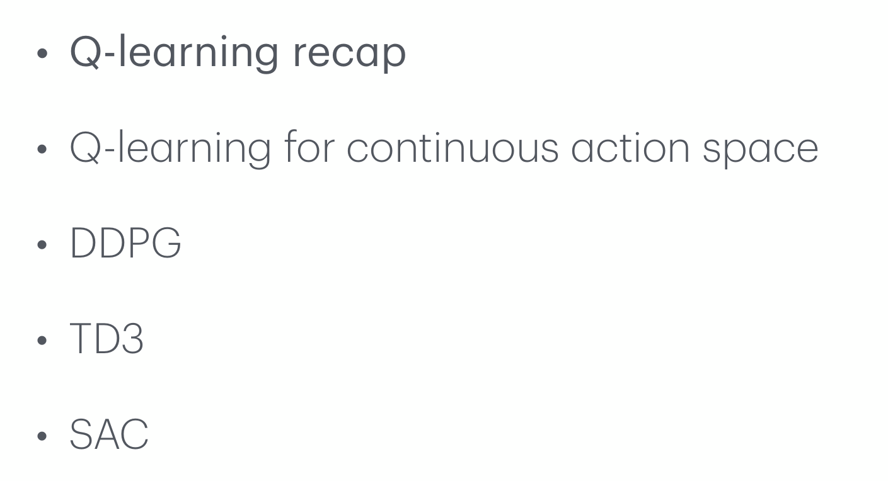
2. 정책은 기준에 따라 개선된다 (Policy is Improved Based on Criteria)
복습은 직전 회차의 출발점이었던 질문에서 다시 시작합니다. 슬라이드 상단의 주황색 두 줄이 그 질문의 전제입니다 — 정책은 “그 행동이 정책에 비해 얼마나 좋은가”라는 기준에 따라 개선된다는 것입니다.
2.1 정책 경사를 지울 수 있는가
슬라이드 위쪽의 정책 반복(policy iteration) 도식은 주황색 “Policy \(\pi\)” 상자와 초록색 “Value \(V\) or \(Q\)” 상자가 두 개의 굽은 화살표로 서로를 가리키는 모양입니다.
- \(\pi \to V/Q\) 방향: 현재 정책을 평가합니다 — Fit \(V_\phi^{\pi_\theta}\) or \(Q_\phi^{\pi_\theta}\).
- \(V/Q \to \pi\) 방향: 평가를 써서 정책 경사로 정책을 올립니다 — \(\theta' \leftarrow \theta + \alpha \nabla_\theta J(\theta)\).
슬라이드는 두 번째 화살표의 식에 굵은 주황색 사선을 그어 지우고, 그 아래에 묻습니다 — “Can we not do policy gradient?”
2.2 \(Q^\pi\)가 있으면 개선된 정책은 곧바로 얻어진다
\(Q^\pi\)가 주어졌다면 개선된 정책 \(\pi'\)은 학습 없이 정의됩니다.
\[ \pi'(\mathbf{a}_t \mid \mathbf{s}_t) = \begin{cases} 1, & \text{if } \mathbf{a}_t = \arg\max_{\mathbf{a}} Q^\pi(\mathbf{s}, \mathbf{a}) \\[4pt] 0, & \text{otherwise} \end{cases} \qquad\Longleftrightarrow\qquad \pi'(\mathbf{s}) = \arg\max_{\mathbf{a}} Q^\pi(\mathbf{s}, \mathbf{a}) \]
왜 이것이 “개선”인가. 임의의 상태 \(\mathbf{s}\)에서 \(\pi'\)이 고르는 행동의 가치는 \(\pi\)가 평균적으로 얻는 가치보다 작을 수 없습니다.
\[ Q^\pi\big(\mathbf{s}, \pi'(\mathbf{s})\big) = \max_{\mathbf{a}} Q^\pi(\mathbf{s}, \mathbf{a}) \ \ge\ \mathbb{E}_{\mathbf{a} \sim \pi(\mathbf{a} \mid \mathbf{s})}\big[Q^\pi(\mathbf{s}, \mathbf{a})\big] = V^\pi(\mathbf{s}) \]
최댓값은 언제나 평균 이상이라는 사실 하나뿐입니다. 이 부등식이 모든 상태에서 성립하므로 첫 행동만 \(\pi'\)으로 바꾸고 이후를 \(\pi\)에 맡겨도 손해가 없고, 이를 매 스텝 반복하면 \(\pi'\) 전체가 \(\pi\)보다 나쁘지 않다는 정책 개선의 논리가 됩니다.
2.3 가치 반복
이 관찰을 받아들이면 순환이 가치 반복(value iteration)으로 바뀝니다. 슬라이드 오른쪽 아래 도식처럼 초록색 “Value \(Q\)” 상자에 “Fit \(Q_\phi\)” 자기 순환이 달리고, 거기서 “arg max” 화살표 하나가 주황색 “Policy \(\pi\)” 상자로 뻗을 뿐, 정책 상자에서 되돌아오는 화살표는 없습니다. 정책은 더 이상 학습 대상이 아니라 \(Q\)에서 조회되는 부산물입니다.
직전 회차에서 이 슬라이드는 “정책 경사를 버릴 수 있다”는 해방의 선언이었습니다. 그런데 이번 회차에서는 같은 식이 문제의 씨앗이 됩니다. \(\pi'(\mathbf{s}) = \arg\max_{\mathbf{a}} Q^\pi(\mathbf{s}, \mathbf{a})\)는 행동 공간 위의 최적화 문제이고, 행동이 몇 개뿐일 때는 전부 평가해 보면 그만이지만 행동이 연속이면 그럴 수 없습니다. 10절에서 이 \(\arg\max\)가 정면으로 문제가 되고, 11절에서 지웠던 정책 경사가 다른 모습으로 되돌아옵니다.
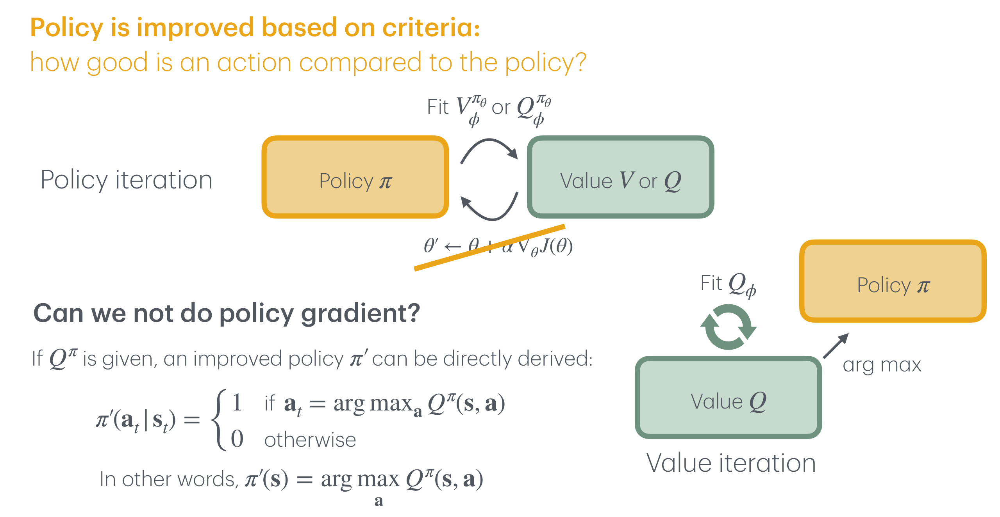
3. 벨만 방정식 (Bellman Equation)
직전 회차에서 두 장에 걸쳐 전개했던 가치 함수의 정의와 벨만 방정식을, 이번 데크는 한 장에 압축합니다.
3.1 상태 가치: 탐욕 정책 아래에서 기댓값은 최댓값이 된다
상태 가치(state value) \(V^\pi(\mathbf{s}_t)\)는 \(\mathbf{s}_t\)에서 얻을 총보상이며, \(Q\)를 행동 분포로 평균한 것입니다.
\[ V^\pi(\mathbf{s}_t) = \mathbb{E}_{\mathbf{a}_t \sim \pi(\mathbf{a}_t \mid \mathbf{s}_t)}\big[Q^\pi(\mathbf{s}_t, \mathbf{a}_t)\big] = \max_{\mathbf{a}_t} Q^\pi(\mathbf{s}_t, \mathbf{a}_t) \qquad \big(\text{with } \pi(\mathbf{s}) = \arg\max_{\mathbf{a}} Q^\pi(\mathbf{s}, \mathbf{a})\big) \]
둘째 등호는 정책이 2절의 탐욕 정책일 때만 성립합니다. 최적 행동 하나에 확률 \(1\)을 몰아주므로 평균이 곧 최댓값이 되는 것입니다.
3.2 상태–행동 가치의 한 스텝 분해와 벨만 방정식
상태–행동 가치(Q-value) \(Q^\pi(\mathbf{s}_t, \mathbf{a}_t)\)는 \(\mathbf{s}_t\)에서 \(\mathbf{a}_t\)를 취했을 때의 총보상입니다. 이를 네 단계로 전개합니다.
1단계 (정의).
\[ Q^\pi(\mathbf{s}_t, \mathbf{a}_t) = \sum_{t'=t}^{T} \mathbb{E}_{\tau \sim \pi(\tau \mid \mathbf{s}_t, \mathbf{a}_t)}\big[r(\mathbf{s}_{t'}, \mathbf{a}_{t'})\big] \]
2단계 (첫 항 분리 + 마르코프 성질). \(t' = t\) 항은 \(\mathbf{s}_t, \mathbf{a}_t\)가 주어졌으므로 \(r_t\) 그대로이고, 나머지 합은 \(\mathbf{s}_{t+1}\)만 주어지면 과거와 독립이므로 \(\mathbf{s}_{t+1}\)에서 시작하는 총보상, 곧 \(V^\pi(\mathbf{s}_{t+1})\)로 묶입니다.
\[ = \mathbb{E}_{\mathbf{s}_{t+1} \sim p(\cdot \mid \mathbf{s}_t, \mathbf{a}_t)}\big[r_t + V^\pi(\mathbf{s}_{t+1})\big] \]
3단계 (3.1 대입 → 벨만 방정식). 탐욕 정책 아래에서 \(V^\pi(\mathbf{s}_{t+1}) = \max_{\mathbf{a}_{t+1}} Q^\pi(\mathbf{s}_{t+1}, \mathbf{a}_{t+1})\)이므로
\[ = \mathbb{E}_{\mathbf{s}_{t+1} \sim p(\cdot \mid \mathbf{s}_t, \mathbf{a}_t)}\Big[r_t + \max_{\mathbf{a}_{t+1}} Q^\pi(\mathbf{s}_{t+1}, \mathbf{a}_{t+1})\Big] \]
이것이 벨만 방정식(Bellman equation)입니다.
4단계 (단일 표본 근사). 환경을 굴려 얻은 \(\mathbf{s}_{t+1}\) 하나가 이미 \(p(\cdot \mid \mathbf{s}_t, \mathbf{a}_t)\)에서 뽑힌 표본이므로, 기댓값을 그 표본 하나로 대체합니다.
\[ \approx r_t + \max_{\mathbf{a}_{t+1}} Q^\pi(\mathbf{s}_{t+1}, \mathbf{a}_{t+1}) \]
슬라이드가 주황색 테두리로 감싼 줄이며, 이 우변이 곧 Q-학습의 회귀 표적입니다. 전이확률을 몰라도 관측된 전이 \((\mathbf{s}_t, \mathbf{a}_t, r_t, \mathbf{s}_{t+1})\) 하나와 \(Q\) 함수의 조회만으로 계산된다는 것이 핵심입니다.
이 슬라이드를 비롯해 5·7·9·10·14절의 표적 식에는 할인율이 없습니다. 유한 지평을 전제로 표기를 가볍게 한 것이며 \(\gamma = 1\)인 경우로 읽으면 됩니다. Double DQN 슬라이드(8절)와 DDPG 의사코드(15절) 이후에는 \(\gamma\)가 다시 등장하는데, 본 포스트는 각 슬라이드의 표기를 그대로 따랐습니다.
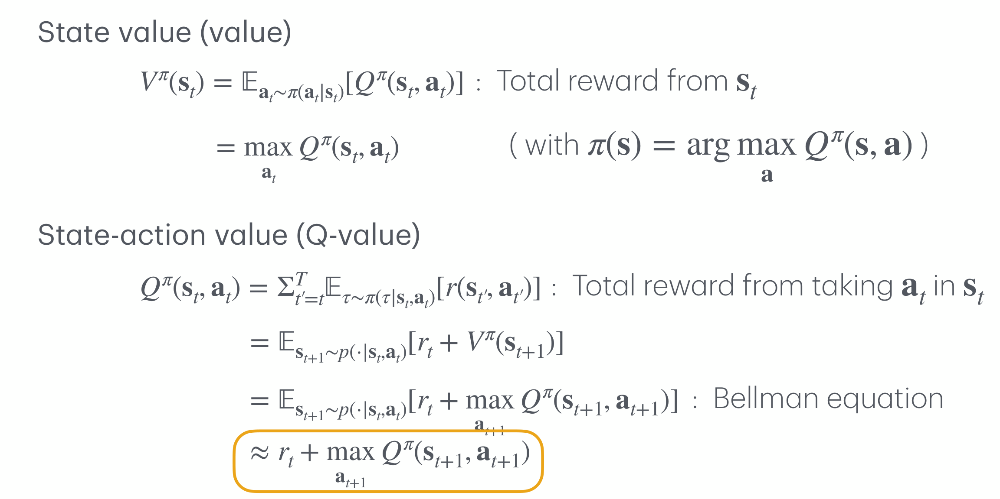
4. Q-학습의 문제들 (Problems in Q-learning)
3절의 표적으로 Q-학습을 실제로 돌리면 세 곳에서 무너지고, DQN(Mnih et al., Human-level control through deep reinforcement learning, Nature 2015)은 각각에 장치 하나씩을 대응시켰습니다.
| 문제 | 무엇이 잘못되는가 | 처방 |
|---|---|---|
| 온라인 Q-학습의 상관된 표본 (correlated samples in online Q-learning) | 연속한 전이가 서로 닮아 있어 i.i.d. 가정이 깨지고 경사가 한쪽으로 쏠린다 | 재생 버퍼 (replay buffer) |
| 움직이는 표적 (moving targets) | 표적 \(r + \max_{\mathbf{a}'} Q_\phi(\mathbf{s}', \mathbf{a}')\)가 학습 중인 \(Q_\phi\) 자신으로 계산되어, \(\phi\)를 움직이면 표적도 따라 움직인다 | 표적 신경망 (target network) |
| 탐색 (exploration) | \(\arg\max\) 정책은 결정적이어서 현재 최선이라 믿는 행동만 시도한다 | 엡실론 탐욕 (epsilon greedy) |
세 처방이 각각 무엇을 고치는지는 직전 회차 10–13절에서 자세히 다루었습니다. 이번 회차에서 이 표를 다시 보는 이유는 따로 있습니다 — 세 장치는 행동 공간이 연속이 되어도 그대로 살아남습니다. 재생 버퍼와 표적 신경망은 DDPG·TD3·SAC에 모두 그대로 들어가고, 엡실론 탐욕만이 연속 행동에 맞는 다른 형태(행동에 더하는 가우시안 잡음, 그리고 SAC의 엔트로피 보너스)로 바뀝니다. 15절의 DDPG 의사코드는 실제로 각 줄 옆에 이 장치들의 이름을 주석으로 달아 둡니다.
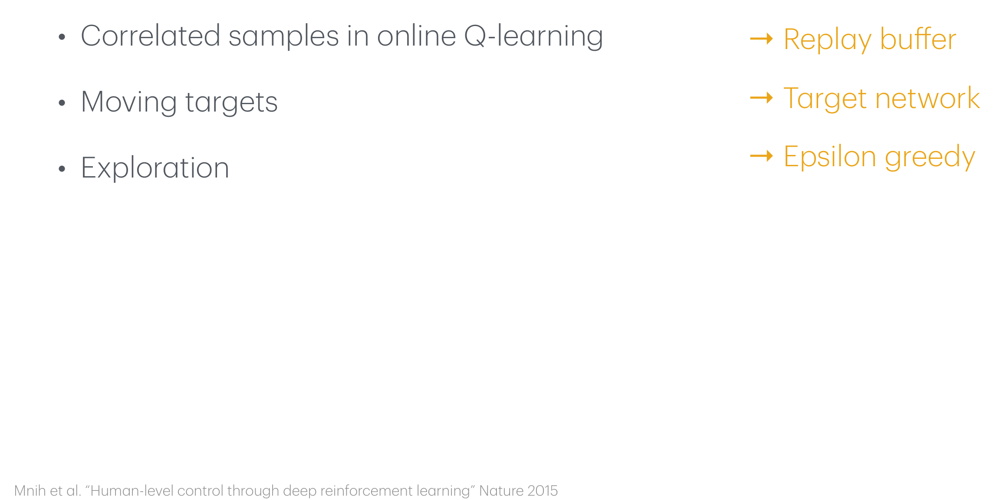
5. 심층 Q-신경망 (Deep Q-Network, DQN)
세 처방을 모두 넣은 알고리즘이 DQN이며, 슬라이드는 이를 “재생 버퍼와 표적 신경망을 쓰는 Q-학습(Q-learning with replay buffer and target network)”이라 요약합니다.
5.1 알고리즘
- 표적 신경망 파라미터를 저장한다: \(\phi' \leftarrow \phi\)
- \(N\) 스텝의 \((\mathbf{s}_i, \mathbf{a}_i, \mathbf{s}_i', r_i)\)를 수집한다.
- 수집한 전이를 \(\mathcal{B}\)에 추가한다.
- \(\mathcal{B}\)에서 배치 \((\mathbf{s}_i, \mathbf{a}_i, \mathbf{s}_i', r_i)\)를 표집한다.
- \(\displaystyle \phi \leftarrow \arg\min_\phi \sum_i \big\lVert Q_\phi(\mathbf{s}_i, \mathbf{a}_i) - y_i \big\rVert^2\) 로 \(Q_\phi\)를 갱신한다.
여기서 표적과 데이터 수집 정책은 각각
\[ y_i \leftarrow r(\mathbf{s}_i, \mathbf{a}_i) + \max_{\mathbf{a}_i'} Q_{\phi'}(\mathbf{s}_i', \mathbf{a}_i'), \qquad \mathbf{a}_i = \begin{cases} \arg\max_{\mathbf{a}} Q_\phi(\mathbf{s}_i, \mathbf{a}), & \text{with probability } 1 - \epsilon \\[4pt] \text{random action}, & \text{with probability } \epsilon \end{cases} \]
입니다. 루프는 세 겹입니다 — 가장 바깥 루프(\(L\times\))가 1–5번을 돌며 표적 신경망을 동기화하고, 중간 루프가 2–5번을 돌며 환경과 상호작용해 버퍼를 채우며, 가장 안쪽 루프(\(K\times\))가 4–5번을 돌며 고정된 표적을 향해 회귀합니다.
5.2 직전 회차의 판본과 달라진 두 곳
같은 제목의 슬라이드가 직전 회차에도 있었지만, 이번 판본은 두 곳이 다릅니다.
- 엡실론 탐욕이 알고리즘 안으로 들어왔습니다. 직전 회차에는 데이터를 “어떤 정책으로(using some policy)” 모은다고만 적혀 있었는데, 이번에는 \(\mathbf{a}_i\)를 고르는 규칙이 식으로 명시되었습니다. 확률 \(1-\epsilon\)으로 탐욕 행동, 확률 \(\epsilon\)으로 무작위 행동입니다.
- 수집과 버퍼 추가가 두 줄로 나뉘어 네 단계가 다섯 단계가 되었습니다.
엡실론 탐욕을 식으로 명시한 것은 뒤를 위한 복선으로 읽힙니다. 연속 행동에서는 이 식의 두 갈래가 모두 문제가 되기 때문입니다 — 위 갈래의 \(\arg\max_{\mathbf{a}}\)는 계산할 수 없고(10절), 아래 갈래의 “무작위 행동”은 15절에서 결정적 행동에 가우시안 잡음을 더하는 형태로 바뀝니다.
이 슬라이드는 표적 신경망을 \(\phi'\)으로 적지만, 7절 이후의 슬라이드는 같은 대상을 \(\phi^-\)로, 15·18·26절의 의사코드는 \(\phi_{\text{targ}}\)로 적습니다. 정책에 대한 표적 신경망도 마찬가지로 \(\theta^-\)와 \(\theta_{\text{targ}}\)가 섞여 쓰입니다. 본 포스트는 각 절에서 원문 슬라이드의 표기를 그대로 따랐으며, 세 기호는 모두 같은 대상(주기적으로 또는 천천히 따라오는 파라미터 사본)을 가리킵니다.
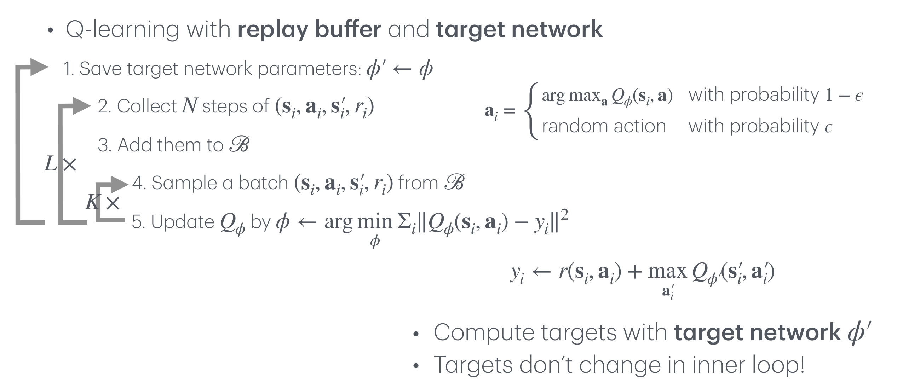
6. DQN을 넘어선 개선들 (Improvements over DQN)
DQN 이후의 네 갈래 개선을 목표와 기법으로 짝지은 로드맵입니다.
| 목표 | 기법 | 직전 회차 |
|---|---|---|
| \(Q\) 값의 과대추정을 막는다 (prevent overestimation of Q-values) | Double DQN | 18–19절 |
| 더 나은 \(Q\) 표적을 추정한다 (estimate better Q-target) | \(n\)-단계 \(Q\) 값 (\(n\)-step Q-value) | 20절 |
| 유용한 데이터로 학습한다 (train with useful data) | 우선순위 경험 재생 (prioritized experience replay) | 21절 |
| \(Q\) 값의 분포를 학습한다 (learn distribution of Q-values) | 분포 강화학습 (distributional RL) | 22–27절 |
| \(\ldots\) |
복습 부분은 이 넷 가운데 Double DQN 하나만 다시 꺼내 7–8절에서 다룬 뒤, 같은 로드맵 슬라이드(10쪽)를 한 번 더 보여 주고 9절의 적합 Q-반복으로 넘어갑니다. Double DQN만 골라 되짚는 데는 이유가 있습니다 — 17절에서 DDPG도 같은 과대추정을 겪는다는 사실이 TD3의 출발점이 되고, TD3의 처방인 클리핑된 이중 Q-학습은 Double DQN의 발상을 이어받은 것이기 때문입니다.
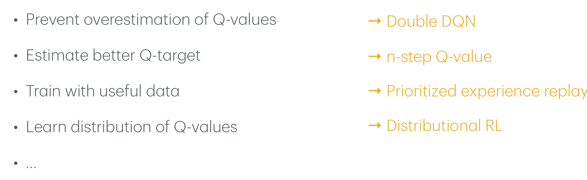
7. Q-학습의 과대추정 (Overestimation in Q-learning)
7.1 문제가 되는 항은 \(\max\) 하나
표적 \(y_i \leftarrow r(\mathbf{s}_i, \mathbf{a}_i) + \max_{\mathbf{a}_i'} Q_{\phi^-}(\mathbf{s}_i', \mathbf{a}_i')\)에서 슬라이드는 \(\max\) 항만 붉게 칠하고 타원을 둘러 “This term is problematic!”이라 적습니다. 이유는 기댓값과 최댓값이 교환되지 않고, 어긋나는 방향이 늘 같다는 데 있습니다.
두 확률변수 \(X_1, X_2\)에 대해 \(\ \mathbb{E}\big[\max(X_1, X_2)\big] \ \ge\ \max\big(\mathbb{E}[X_1], \mathbb{E}[X_2]\big)\)
증명. 모든 실현값에서 \(\max(X_1, X_2) \ge X_1\)이고 \(\max(X_1, X_2) \ge X_2\)입니다. 기댓값은 단조이므로 \(\mathbb{E}[\max(X_1, X_2)]\)는 \(\mathbb{E}[X_1]\) 이상이면서 \(\mathbb{E}[X_2]\) 이상이고, 따라서 둘 중 큰 값 이상입니다. \(\blacksquare\)
이를 \(Q\) 값에 옮기면 슬라이드의 둘째 줄이 됩니다.
\[ \underbrace{\mathbb{E}\big[\max\big(Q(\mathbf{s}, \mathbf{a}_1), Q(\mathbf{s}, \mathbf{a}_2), \ldots\big)\big]}_{\textbf{우리가 하는 것 (What we do)}} \ \ge\ \underbrace{\max\big(\mathbb{E}[Q(\mathbf{s}, \mathbf{a}_1)], \mathbb{E}[Q(\mathbf{s}, \mathbf{a}_2)], \ldots\big)}_{\textbf{우리가 원하는 것 (What we want)}} \]
학습된 \(Q\)는 참값에 잡음이 섞인 추정치이고, 여러 행동 중 최댓값을 고르는 순간 양의 오차를 가진 행동이 뽑힐 확률이 구조적으로 높아집니다. 슬라이드의 문장 그대로 \(\max_{\mathbf{a}_i'} Q_\phi(\mathbf{s}_i', \mathbf{a}_i')\)는 언제나 양의 오차를 골라 다음 상태의 가치를 과대추정하며, 그렇게 부풀려진 표적이 다시 \(Q\)의 학습 표적이 되므로 편향이 부트스트랩을 타고 누적됩니다.
두 행동의 참값이 모두 \(0\)이고, 추정치가 각각 독립적으로 확률 \(\tfrac12\)씩 \(+1\) 또는 \(-1\)의 오차를 갖는다고 해 봅시다. 네 경우 \((+1,+1), (+1,-1), (-1,+1), (-1,-1)\)의 최댓값은 \(+1, +1, +1, -1\)이므로
\[ \mathbb{E}\big[\max(X_1, X_2)\big] = \tfrac34 \cdot (+1) + \tfrac14 \cdot (-1) = \tfrac12 \ >\ 0 = \max\big(\mathbb{E}[X_1], \mathbb{E}[X_2]\big) \]
입니다. 각 추정치는 평균적으로 정확한데도 최댓값을 취하는 순간 \(+\tfrac12\)의 편향이 생깁니다. 이 예는 17절에서 최솟값에 대해 한 번 더 씁니다.
7.2 범인을 더 좁히면: 선택과 평가를 같은 신경망이 한다
\(\max\)를 두 단계로 풀어 쓰면 문제의 소재가 선명해집니다.
\[ \max_{\mathbf{a}'} Q_{\phi^-}(\mathbf{s}', \mathbf{a}') = \underbrace{Q_{\phi^-}}_{\text{Value also comes from } Q_{\phi^-}}\Big(\mathbf{s}', \underbrace{\arg\max_{\mathbf{a}'} Q_{\phi^-}(\mathbf{s}', \mathbf{a}')}_{\text{Action selected according to } Q_{\phi^-}}\Big) \]
- 행동 선택(action selection): 어느 행동이 최선인지 고른다 — 안쪽의 \(\arg\max\)
- 행동 평가(action evaluation): 고른 행동의 가치를 읽는다 — 바깥의 \(Q_{\phi^-}\)
두 일을 같은 신경망이 하기 때문에(슬라이드의 also), 선택 단계에서 우연히 부풀려진 행동이 뽑히면 평가 단계에서도 그 부풀려진 값이 그대로 읽힙니다.
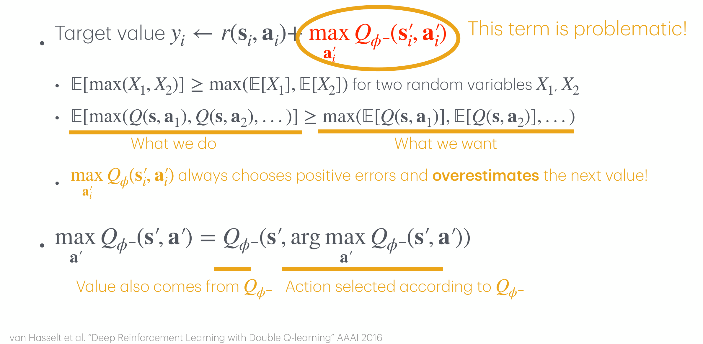
8. 이중 DQN (Double DQN, DDQN)
8.1 처방: 선택과 평가를 서로 다른 신경망에 맡긴다
7.2의 분해가 처방을 그대로 지시합니다.
- 행동 선택과 행동 평가의 오차를 탈상관(decorrelate)시킨다.
- 현재 신경망으로 행동을 선택하고, 표적 신경망으로 그 행동을 평가한다.
두 표적을 나란히 놓으면 차이는 안쪽 \(\arg\max\)의 아래첨자 하나입니다. 이 데크에서 할인율 \(\gamma\)가 처음 나타나는 곳이기도 합니다.
\[ \textbf{Standard DQN:}\quad y = r + \gamma\, Q_{\phi^-}\Big(\mathbf{s}', \arg\max_{\mathbf{a}'} Q_{\phi^-}(\mathbf{s}', \mathbf{a}')\Big) \]
\[ \textbf{Double DQN:}\quad y = r + \gamma\, Q_{\phi^-}\Big(\mathbf{s}', \arg\max_{\mathbf{a}'} Q_{\phi}(\mathbf{s}', \mathbf{a}')\Big) \]
8.2 왜 이것으로 충분한가
\(\phi\)가 어떤 행동의 가치를 우연히 부풀려 그 행동을 고르더라도, 그 행동을 평가하는 것은 \(\phi^-\)입니다. 두 신경망의 오차가 완전히 독립은 아니어도 서로 다르므로, \(\phi\)의 낙관이 \(\phi^-\)의 평가에서 교정될 여지가 생깁니다. 게다가 \(\phi^-\)는 DQN이 이미 갖고 있던 신경망이므로 추가 비용이 거의 없습니다 — 슬라이드의 표현대로 “Simple but very effective!”
Double DQN의 요점은 “하나의 추정치가 스스로를 평가하게 두지 말라”는 것입니다. DDPG에서는 행동 선택을 \(\arg\max\)가 아니라 정책망이 하므로 이 식을 그대로 옮길 수 없고, TD3는 대신 두 개의 비평가를 두고 그중 작은 값을 표적으로 쓰는 방식으로 같은 발상을 구현합니다(17절).
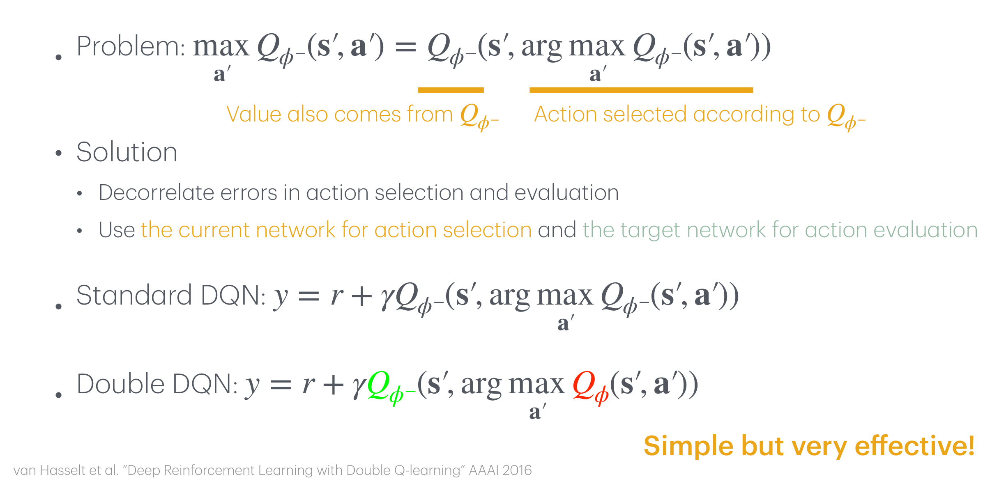
9. 적합 Q-반복 알고리즘 (Fitted Q-Iteration Algorithm, Q-learning)
로드맵 슬라이드(10쪽)가 한 번 더 지나간 뒤, 복습은 Q-학습의 가장 기본적인 골격으로 돌아가 끝납니다. 이 슬라이드가 복습의 마지막에 놓인 이유는 두 가지입니다 — 이번 강의의 제목인 오프폴리시(off-policy)가 어디서 오는지를 밝히고, 다음 부분이 그대로 가져다 쓸 세 상자의 순환 도식을 깔아 두기 위해서입니다.
9.1 알고리즘
- 아무 정책(any policy)이나 롤아웃해 전이를 수집한다.
- 표적을 설정한다: \(\displaystyle y_i = r_i + \max_{\mathbf{a}_i'} Q_\phi(\mathbf{s}_i', \mathbf{a}_i')\)
- \(Q_\phi(\mathbf{s}_i, \mathbf{a}_i)\)를 \(y_i\)에 적합시킨다.
슬라이드 왼쪽 아래 상자의 1번 줄은 수집 대상을 \(\{\mathbf{s}_i, \mathbf{a}_i, r_i\}\)로 적지만, 2번 줄의 표적에 다음 상태 \(\mathbf{s}_i'\)이 필요하므로 실제로는 왼쪽 위 도식처럼 \((\mathbf{s}_i, \mathbf{a}_i, \mathbf{s}_i', r_i)\)를 모아야 합니다.
9.2 정책 의존성이 없다 → 오프폴리시
- 표적 \(y_i\)는 \(r_i\)와 \(\max_{\mathbf{a}'} Q_\phi(\mathbf{s}_i', \mathbf{a}')\)로만 이루어지고, 둘 다 데이터를 어떤 정책으로 모았는지와 무관합니다.
- 정책은 \(\pi(\mathbf{s}) = \arg\max_{\mathbf{a}} Q_\phi(\mathbf{s}, \mathbf{a})\)로 암묵적으로 정의될 뿐 명시적으로 갱신되지 않습니다(but no explicit update on \(\pi\) as \(\pi\) is implicitly defined using \(Q_\phi\)).
그래서 슬라이드의 결론은 “No dependency on \(\pi\) → Off-policy RL”입니다. 직전 회차의 같은 슬라이드는 이 줄을 “Off-policy algorithm”이라 적었는데, 이번 판본은 강의 제목과 같은 “Off-policy RL”로 바꾸었습니다.
오프폴리시라는 것은 재생 버퍼에 쌓인 과거의 데이터를 몇 번이고 다시 쓸 수 있다는 뜻입니다. 05회차의 PPO는 데이터를 재사용하기 위해 중요도 가중치와 클리핑이라는 대가를 치러야 했지만, 표적이 정책을 참조하지 않는 Q-학습에는 그런 보정이 필요 없습니다. 뒤의 DDPG·TD3·SAC는 모두 명시적인 정책망을 다시 들여오면서도 표적이 데이터 수집 정책에 의존하지 않도록 설계를 지켜 이 성질을 보존하며, 그래서 이들을 묶어 오프폴리시 행위자–비평가(off-policy actor-critic)라 부릅니다(29절).
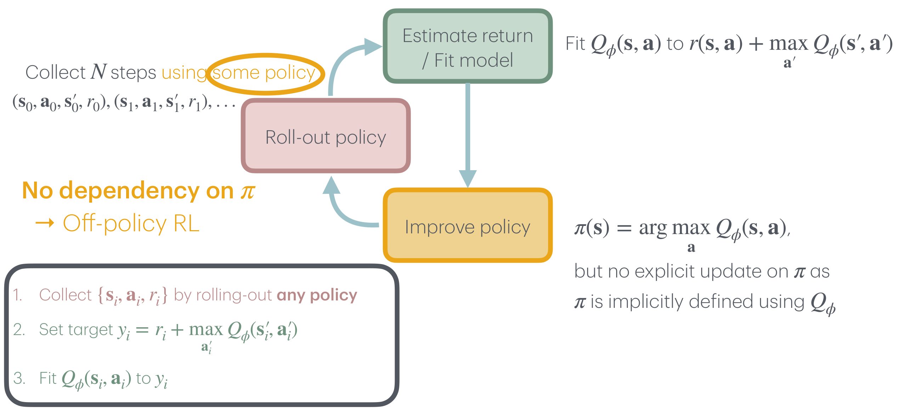
10. 연속 행동 공간을 위한 DQN? (DQN for Continuous Action Spaces?)
계획 슬라이드(12쪽)가 다시 나타나 이번에는 “Q-learning for continuous action space”와 “DDPG” 두 줄을 진하게 칠합니다. 이 부분의 질문은 하나입니다 — 9절의 순환을 행동이 연속인 환경에 그대로 쓸 수 있는가?
10.1 \(\max\)는 두 군데에 숨어 있다
슬라이드는 9절의 세 상자 도식을 그대로 가져와 식만 바꿉니다. 데이터는 이제 탐욕 정책 \(\pi(\mathbf{s})\)로 모으고(Collect \(N\) steps using \(\pi(\mathbf{s})\)), 표적에는 5절의 표적 신경망 \(Q_{\phi^-}\)가 들어가며, 왼쪽 아래 상자도 버퍼에 저장하는 형태로 바뀌었습니다.
- \(\{\mathbf{s}_i, \mathbf{a}_i, \mathbf{s}_i', r_i\}\)를 수집해 \(\mathcal{B}\)에 저장한다.
- 표적을 설정한다: \(\displaystyle y_i = r_i + \max_{\mathbf{a}_i'} Q_{\phi^-}(\mathbf{s}_i', \mathbf{a}_i')\)
- \(Q_\phi(\mathbf{s}_i, \mathbf{a}_i)\)를 \(y_i\)에 적합시킨다.
그리고 두 곳을 주황색으로 칠합니다.
- 표적 안의 \(\max\). 슬라이드는 이를 한 줄 더 풀어 적습니다.
\[ r(\mathbf{s}, \mathbf{a}) + \max_{\mathbf{a}'} Q_{\phi^-}(\mathbf{s}', \mathbf{a}') = r(\mathbf{s}, \mathbf{a}) + Q_{\phi^-}\big(\mathbf{s}', \pi(\mathbf{s}')\big) \]
탐욕 정책이 고른 행동을 넣으면 그것이 곧 최댓값이라는 뜻입니다. 엄밀히 말하면 이 등호의 \(\pi\)는 \(Q_{\phi^-}\)에 대한 탐욕 정책이지만, 요점은 표적을 계산하는 일이 “\(\mathbf{s}'\)에서의 탐욕 행동을 찾는 일”로 귀결된다는 것입니다.
- 정책 개선의 \(\arg\max\). \(\pi(\mathbf{s}) = \arg\max_{\mathbf{a}} Q_\phi(\mathbf{s}, \mathbf{a})\) 역시 탐욕 행동을 찾는 일입니다.
즉 두 곳 모두 슬라이드의 주황색 제목 그대로 “탐욕 정책 \(\pi(\mathbf{s})\) 찾기(Finding a greedy policy)”라는 같은 문제를 풀어야 합니다.
10.2 이산 행동에서는 쉬웠던 일이 연속 행동에서는 왜 어려운가
행동이 몇 개뿐이면 모든 행동의 \(Q\) 값을 평가해 가장 큰 것을 고르면 끝입니다. 그러나 행동이 \(\mathbf{a} \in \mathbb{R}^m\)이면 후보가 무한히 많으므로, \(\arg\max_{\mathbf{a}}\)는 조회가 아니라 최적화 문제가 됩니다. 게다가 이 최적화를 한 번만 푸는 것이 아닙니다.
- 표적을 만들 때마다 배치 안의 모든 \(\mathbf{s}_i'\)에 대해 풀어야 하고,
- 환경에서 행동할 때마다 매 스텝 풀어야 합니다.
슬라이드가 제시하는 두 가지 방법은 다음과 같습니다.
| 방법 | 하는 일 | 왜 느리고 부정확한가 |
|---|---|---|
| (1) 가능한 한 많은 행동을 시도한다 (try as many actions as possible) | 후보 행동을 여러 개 뽑아 \(Q\)를 평가하고 가장 큰 것을 고른다 | 정확도가 후보 수에 묶인다. 차원마다 \(k\)개씩 격자로 깔면 \(k^m\)번의 평가가 필요해 행동 차원이 커질수록 감당할 수 없다 |
| (2) 최적화한다 (optimization) | \(Q_\phi(\mathbf{s}, \cdot)\)를 행동에 대해 반복적으로 최적화한다 | 상태 하나마다 안쪽 반복 루프가 돈다. 반복 횟수를 줄이면 최댓값에 못 미치고, 국소 최댓값에 머물 수도 있다 |
결론은 슬라이드의 한 줄입니다 — “Both are slow and inaccurate.”
두 방법 모두 상태가 바뀔 때마다 \(\arg\max\)를 처음부터 다시 푼다는 점에서 같습니다. 그런데 비슷한 상태에서의 최선의 행동은 대개 비슷하고, \(Q_\phi\)가 한 번 갱신되어도 최선의 행동은 조금만 움직일 뿐입니다. 이 반복되는 계산을 매번 새로 하지 말고 한 번 학습해 두면 어떨까 — 다음 절의 발상이 바로 이것입니다.
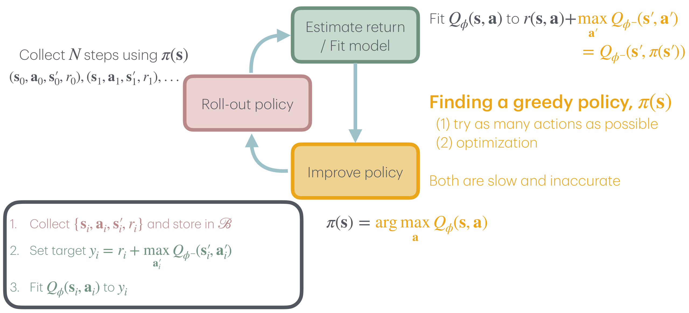
11. 연속 행동에서 탐욕 정책 찾기 (Finding Greedy Policy with Continuous Actions)
11.1 \(\arg\max\)를 신경망으로 근사한다
슬라이드의 답은 볼드 한 줄입니다 — 탐욕 정책 \(\pi(\mathbf{s})\)를 결정적 정책 \(\pi_\theta(\mathbf{s})\)로 근사한다(Approximate \(\pi(\mathbf{s})\) with a deterministic policy \(\pi_\theta(\mathbf{s})\)). 상태를 넣으면 행동 하나를 내놓는 신경망 \(\pi_\theta\)를 두고, 그 출력이 \(\arg\max_{\mathbf{a}} Q_\phi(\mathbf{s}, \mathbf{a})\)가 되도록 학습시키자는 것입니다. 그러면
\[ \max_{\mathbf{a}} Q_\phi(\mathbf{s}, \mathbf{a}) \approx Q_\phi\big(\mathbf{s}, \pi_\theta(\mathbf{s})\big) \]
가 되어, 표적의 \(\max\)도 정책의 \(\arg\max\)도 신경망의 순전파 한 번으로 대체됩니다. 10.2의 두 방법이 상태마다 최적화를 새로 풀던 것과 달리, 최적화의 결과를 파라미터 \(\theta\) 안에 저장해 두고 모든 상태가 공유하는 셈입니다. “결정적”이라는 이름은 \(\pi_\theta\)가 분포가 아니라 행동 한 점을 내놓는다는 뜻이며, 이는 \(\arg\max\)로 정의되는 탐욕 정책이 원래 결정적이라는 사실과 맞아떨어집니다.
11.2 무엇을 최대화하는가
\(\pi_\theta\)를 학습시키는 목적함수는
\[ \max_\theta\ \mathbb{E}_{\mathbf{s} \sim \mathcal{B}}\Big[Q_\phi\big(\mathbf{s}, \pi_\theta(\mathbf{s})\big)\Big] \]
입니다. 이 목적함수가 왜 탐욕 정책을 찾는지는 부등식 하나로 확인됩니다. 어떤 \(\theta\)에 대해서도 각 상태에서 \(Q_\phi(\mathbf{s}, \pi_\theta(\mathbf{s})) \le \max_{\mathbf{a}} Q_\phi(\mathbf{s}, \mathbf{a})\)이므로, 양변에 기댓값을 취하면
\[ \mathbb{E}_{\mathbf{s} \sim \mathcal{B}}\Big[Q_\phi\big(\mathbf{s}, \pi_\theta(\mathbf{s})\big)\Big] \ \le\ \mathbb{E}_{\mathbf{s} \sim \mathcal{B}}\Big[\max_{\mathbf{a}} Q_\phi(\mathbf{s}, \mathbf{a})\Big] \]
이고, 등호는 버퍼의 (거의) 모든 상태에서 \(\pi_\theta(\mathbf{s})\)가 최댓값을 주는 행동일 때 성립합니다. 즉 좌변을 \(\theta\)에 대해 끌어올리는 것은 \(\pi_\theta\)를 탐욕 정책 쪽으로 밀어 올리는 것이고, 그 과정에서 모든 행동의 \(Q\)를 일일이 평가할 필요가 없습니다(No need for exhaustive Q evaluation).
끌어올리는 방법은 경사 상승입니다. 이것이 가능한 이유가 슬라이드의 셋째 불릿입니다 — \(\mathbf{a}\)가 연속이므로 \(Q_\phi(\mathbf{s}, \mathbf{a})\)는 \(\mathbf{a}\)에 대해 미분 가능합니다. 연속 행동이 만든 문제(무한한 후보)를 연속 행동이 주는 선물(미분 가능성)로 푸는 구도입니다.
11.3 왜 조금씩 따라가기만 하면 되는가
슬라이드 오른쪽의 그래프가 둘째 불릿 — \(Q_\phi\)가 조금 갱신되면 \(\pi_\theta\)도 조금만 바뀌면 된다 — 을 그림으로 보여 줍니다. 초록 곡선(갱신 전의 \(Q(\mathbf{s}, \cdot)\))의 최댓값 위치가 \(\pi_\theta(\mathbf{s})\)이고, \(Q\)가 조금 바뀐 주황 곡선의 최댓값 위치는 그 바로 옆의 \(\pi_{\theta'}(\mathbf{s})\)입니다. 비평가가 한 번 갱신될 때마다 최선의 행동은 조금씩만 움직이므로, 정책망은 매번 처음부터 풀 필요 없이 현재 \(\theta\)에서 몇 걸음의 경사 상승만으로 따라갈 수 있습니다.
2절에서 “정책 경사를 하지 않을 수는 없을까”라며 지웠던 \(\theta' \leftarrow \theta + \alpha \nabla_\theta J(\theta)\)가, 연속 행동이라는 벽 앞에서 다시 필요해졌습니다. 다만 이번의 정책망은 \(Q\)의 \(\arg\max\)를 흉내 내는 계산 도구이고, 개선의 기준은 로그 확률에 이점을 곱한 값이 아니라 \(Q_\phi\) 자체의 경사입니다. 그 차이가 분산에 무엇을 뜻하는지가 다음 절의 주제입니다.
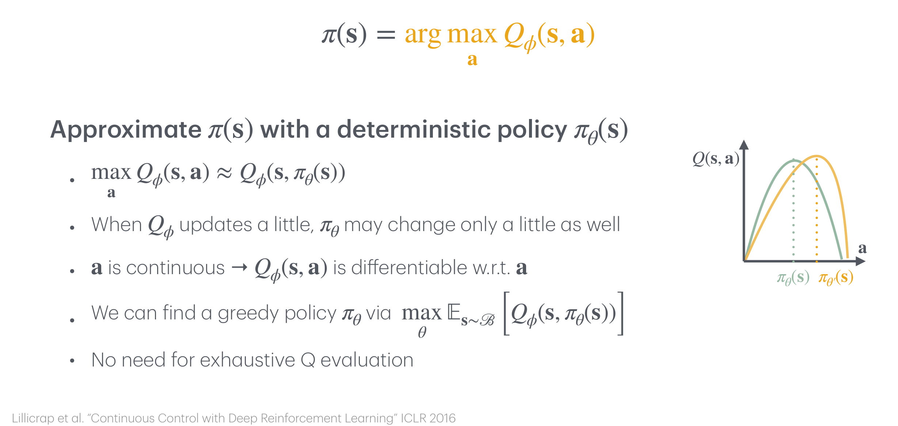
12. 심층 결정적 정책 경사 (Deep Deterministic Policy Gradient)
11.2의 목적함수를 실제로 미분해 경사를 구하는 슬라이드입니다.
12.1 목적함수
\[ J(\theta) = \mathbb{E}_{\mathbf{s}_t \sim \pi_\theta(\tau)}\Big[Q_\phi(\mathbf{s}, \mathbf{a})\big|_{\mathbf{s} = \mathbf{s}_t,\ \mathbf{a} = \pi_\theta(\mathbf{s}_t)}\Big] \]
\(\pi_\theta\)가 방문하는 상태 \(\mathbf{s}_t\)들에서, \(\pi_\theta\)가 고른 행동을 비평가 \(Q_\phi\)로 평가한 값의 평균입니다.
12.2 연쇄 법칙으로 경사 구하기
1단계 (경사를 기댓값 안으로).
\[ \nabla_\theta J(\theta) = \mathbb{E}_{\mathbf{s}_t \sim \pi_\theta(\tau)}\Big[\nabla_\theta Q_\phi(\mathbf{s}, \mathbf{a})\big|_{\mathbf{s} = \mathbf{s}_t,\ \mathbf{a} = \pi_\theta(\mathbf{s}_t)}\Big] \]
2단계 (연쇄 법칙). 괄호 안의 \(g(\theta) = Q_\phi(\mathbf{s}_t, \pi_\theta(\mathbf{s}_t))\)는 \(\theta \mapsto \mathbf{a} = \pi_\theta(\mathbf{s}_t) \mapsto Q_\phi(\mathbf{s}_t, \mathbf{a})\)의 합성함수입니다. \(\theta\)는 \(Q_\phi\)에 직접 들어 있지 않고 행동을 통해서만 영향을 주므로
\[ = \mathbb{E}_{\mathbf{s}_t \sim \pi_\theta(\tau)}\Big[\nabla_{\mathbf{a}} Q_\phi(\mathbf{s}, \mathbf{a})\big|_{\mathbf{s} = \mathbf{s}_t,\ \mathbf{a} = \pi_\theta(\mathbf{s}_t)}\ \nabla_\theta \pi_\theta(\mathbf{s})\big|_{\mathbf{s} = \mathbf{s}_t}\Big] \]
입니다. 행동이 \(\mathbf{a} \in \mathbb{R}^m\), 파라미터가 \(\theta \in \mathbb{R}^d\)이면 \(\nabla_{\mathbf{a}} Q_\phi\)는 \(1 \times m\) 행벡터, \(\nabla_\theta \pi_\theta\)는 \(m \times d\) 야코비 행렬이고, 성분으로 쓰면
\[ \frac{\partial g}{\partial \theta_k} = \sum_{j=1}^{m} \frac{\partial Q_\phi(\mathbf{s}_t, \mathbf{a})}{\partial a_j}\bigg|_{\mathbf{a} = \pi_\theta(\mathbf{s}_t)} \cdot \frac{\partial \pi_{\theta, j}(\mathbf{s}_t)}{\partial \theta_k}, \qquad k = 1, \ldots, d \]
입니다. 읽는 법은 간단합니다 — 비평가가 “행동을 이쪽으로 움직이면 \(Q\)가 오른다”고 알려 주면(\(\nabla_{\mathbf{a}} Q_\phi\)), 정책망은 “그 방향으로 행동을 옮기려면 파라미터를 이렇게 바꾸라”로 번역합니다(\(\nabla_\theta \pi_\theta\)). 이 경사로는 \(\theta\)만 갱신하고 비평가의 \(\phi\)는 고정해 둡니다.
3단계 (재생 버퍼로 근사).
\[ \approx \mathbb{E}_{\mathbf{s}_t \sim \mathcal{B}}\Big[\nabla_{\mathbf{a}} Q_\phi(\mathbf{s}, \mathbf{a})\big|_{\mathbf{s} = \mathbf{s}_t,\ \mathbf{a} = \pi_\theta(\mathbf{s}_t)}\ \nabla_\theta \pi_\theta(\mathbf{s})\big|_{\mathbf{s} = \mathbf{s}_t}\Big] \]
현재 정책이 방문할 상태 분포 대신 재생 버퍼에 쌓인 상태들을 씁니다. 이 한 줄 덕분에 정책 갱신까지 버퍼의 데이터만으로 이루어지고, 알고리즘 전체가 오프폴리시로 남습니다.
\(\mathbf{s}_t \sim \pi_\theta(\tau)\)의 분포 자체가 \(\theta\)에 의존하므로, 엄밀하게는 상태 분포가 바뀌는 효과에 대한 항이 따로 생깁니다. 슬라이드는 그 항을 다루지 않고 3단계에서 재생 버퍼의 상태로 넘어갑니다. 버퍼의 분포는 \(\theta\)와 무관하므로, 최종적으로 최적화하는 대상은 11.2와 14절의 \(J(\theta) = \mathbb{E}_{\mathbf{s} \sim \mathcal{B}}[Q_\phi(\mathbf{s}, \pi_\theta(\mathbf{s}))]\)이고, 이 목적함수에 대해서는 경사와 기댓값의 교환이 그대로 정당합니다. 11.2에서 본 것처럼 이 목적함수는 “버퍼의 상태들에서 탐욕 행동을 찾는다”는 뜻을 가지므로, 근사라기보다 풀고자 하는 문제를 정확히 다시 쓴 것으로 볼 수 있습니다.
12.3 다시 고분산? — 아닙니다
슬라이드 아래쪽 주황색 줄은 이름에 붙은 “policy gradient”에 따옴표를 치고 묻습니다 — “High variance again?” 03–05회차가 기저선·GAE·클리핑으로 싸워 온 고분산 문제가 돌아오느냐는 것입니다. 답은 “NO, less variance than PPO thanks to (1) deterministic actions and (2) gradient directly from critic”입니다.
| 확률적 정책 경사 (03–05회차) | 결정적 정책 경사 (DDPG) | |
|---|---|---|
| 정책 | 분포 \(\pi_\theta(\mathbf{a} \mid \mathbf{s})\) | 행동 한 점 \(\pi_\theta(\mathbf{s})\) |
| 경사 추정량 | \(\mathbb{E}\big[\nabla_\theta \log \pi_\theta(\mathbf{a} \mid \mathbf{s})\, \hat{A}(\mathbf{s}, \mathbf{a})\big]\) | \(\mathbb{E}\big[\nabla_{\mathbf{a}} Q_\phi(\mathbf{s}, \mathbf{a})\big|_{\mathbf{a} = \pi_\theta(\mathbf{s})} \nabla_\theta \pi_\theta(\mathbf{s})\big]\) |
| 비평가가 주는 정보 | 표집된 행동이 얼마나 좋았는가 (스칼라) | 행동을 어느 쪽으로 움직여야 하는가 (경사 벡터) |
| 무작위성의 출처 | 상태 표집 + 행동 표집 | 상태 표집뿐 |
| 데이터 | 온폴리시 (PPO는 중요도 가중치로 제한적 재사용) | 재생 버퍼 (오프폴리시) |
- (1) 결정적 행동: 행동을 표집하지 않으므로, 경사 추정에서 “어떤 행동이 우연히 뽑혔는가”에서 오는 분산이 통째로 사라집니다.
- (2) 비평가에서 직접 오는 경사: 확률적 정책 경사에서 \(\hat{A}\)는 뽑힌 행동이 좋았는지 나빴는지만 말해 주므로, 어느 방향이 좋은지는 많은 표본을 평균해 통계적으로 알아내야 했습니다. 결정적 정책 경사에서는 \(\nabla_{\mathbf{a}} Q_\phi\)가 방향을 직접 알려 줍니다.
정책은 이제 \(\nabla_{\mathbf{a}} Q_\phi\)가 가리키는 쪽으로만 움직입니다. 비평가의 기울기가 틀리면 정책은 틀린 방향으로 정확하게 움직이고, 비평가의 잡음이 만든 가짜 봉우리가 있으면 정책은 정확히 그 봉우리로 올라갑니다. 17절에서 TD3가 지목하는 두 번째 문제(“결정적 정책은 잡음 섞인 표적 Q-함수에 빠르게 과적합한다”)가 바로 이 대가입니다.
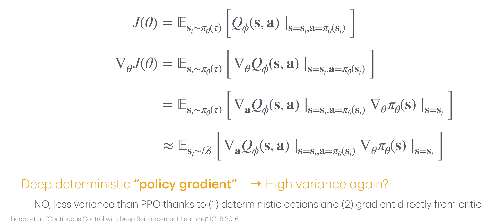
13. 소프트 표적 갱신 (Soft Target Update)
DDPG는 DQN의 표적 신경망을 그대로 쓰되, 갱신 방식을 바꿉니다.
| DQN: 하드 표적 갱신 (hard target update) | DDPG: 소프트 표적 갱신 (soft target update) | |
|---|---|---|
| 갱신식 | \(\phi^- \leftarrow \phi\) | \(\phi^- \leftarrow \rho\,\phi^- + (1 - \rho)\,\phi\) |
| 빈도 | \(L\) 스텝마다 (every \(L\) steps) | 매 스텝 (every step) |
| 초모수 | \(L\) | \(\rho \approx 0.99\) |
| 다른 이름 | — | 폴랴크 평균(Polyak average), 지수 이동 평균(exponential moving average) |
13.1 소프트 갱신은 과거 파라미터들의 가중 평균이다
갱신식을 거꾸로 펼쳐 보면 이름의 뜻이 드러납니다. \(t\)번째 스텝의 표적 파라미터를 \(\phi^-_t\), 현재 파라미터를 \(\phi_t\)라 하면
\[ \begin{aligned} \phi^-_t &= \rho\,\phi^-_{t-1} + (1-\rho)\,\phi_t \\ &= \rho\big(\rho\,\phi^-_{t-2} + (1-\rho)\,\phi_{t-1}\big) + (1-\rho)\,\phi_t = (1-\rho)\big(\phi_t + \rho\,\phi_{t-1}\big) + \rho^2\,\phi^-_{t-2} \\ &\ \ \vdots \\ &= (1-\rho)\sum_{k=0}^{t-1} \rho^k\, \phi_{t-k} \ +\ \rho^t\, \phi^-_0 \end{aligned} \]
입니다. 가중치의 합은 등비급수 공식으로
\[ (1-\rho)\sum_{k=0}^{t-1}\rho^k + \rho^t = (1-\rho)\cdot\frac{1-\rho^t}{1-\rho} + \rho^t = 1 \]
이므로, \(\phi^-\)는 최근 파라미터일수록 무겁게 쳐 주는 과거 파라미터들의 평균입니다. 충분히 오래 학습하면(\(\rho^t \to 0\)) \(k\)스텝 전 파라미터의 가중치는 \(w_k = (1-\rho)\rho^k\)이고, 표적이 평균적으로 몇 스텝 뒤처지는지는
\[ \sum_{k=0}^{\infty} k\, w_k = (1-\rho)\sum_{k=0}^{\infty} k\rho^k = (1-\rho)\cdot\frac{\rho}{(1-\rho)^2} = \frac{\rho}{1-\rho} \]
로 계산됩니다. \(\rho = 0.99\)이면 약 \(99\)스텝입니다.
13.2 하드 갱신과 무엇이 다른가
- 하드 갱신에서 표적은 \(L\) 스텝 동안 완전히 고정되었다가 한순간에 현재 값으로 점프합니다. 뒤처지는 정도가 \(0\)에서 \(L-1\) 사이를 톱니처럼 오갑니다.
- 소프트 갱신에서 표적은 매 스텝 아주 조금씩 현재 값을 따라가며, 뒤처지는 정도가 약 \(\rho/(1-\rho)\)로 일정합니다. 표적이 갑자기 바뀌는 순간이 없으므로 회귀 문제가 매끄럽게 변합니다.
두 방식 모두 “표적을 현재 신경망보다 느리게 움직여 움직이는 표적 문제를 누그러뜨린다”는 같은 목적을 가지며, 다른 것은 느리게 만드는 방식입니다.
13.3 표적 신경망이 정책에도 필요한 이유
슬라이드 아래쪽 문장 — DDPG는 정책과 가치 함수 모두에 표적 신경망을 둔다(DDPG uses target networks for both policy and value function) — 은 14절의 표적 \(r + Q_{\phi^-}(\mathbf{s}', \pi_{\theta^-}(\mathbf{s}'))\)에서 이유가 드러납니다. 표적 안에서 다음 행동을 고르는 것이 이제 정책망이므로, 여기에 현재 정책 \(\pi_\theta\)를 쓰면 정책이 한 번 갱신될 때마다 표적도 따라 움직입니다. \(Q\) 쪽의 움직이는 표적을 막아 놓고 정책 쪽 뒷문을 열어 두는 셈이므로, 정책에도 같은 방식으로 천천히 따라오는 사본 \(\theta^-\)를 둡니다.
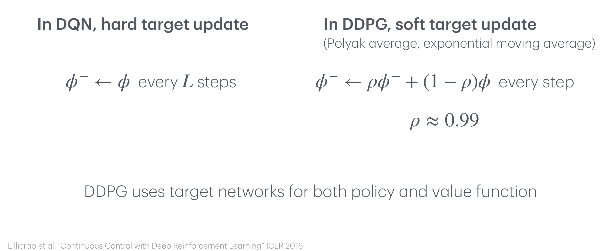
14. DDPG의 전체 구조 (Deep Deterministic Policy Gradient (DDPG))
11–13절의 조각을 9·10절의 세 상자 순환 위에 다시 조립한 슬라이드입니다.
14.1 알고리즘
- \(\{\mathbf{s}_i, \mathbf{a}_i, \mathbf{s}_i', r_i\}\)를 수집해 \(\mathcal{B}\)에 저장한다. (데이터 수집 정책은 \(\pi_\theta(\mathbf{s})\))
- 표적을 설정한다: \(\displaystyle y_i = r_i + Q_{\phi^-}\big(\mathbf{s}_i', \pi_{\theta^-}(\mathbf{s}_i')\big)\)
- \(Q_\phi(\mathbf{s}_i, \mathbf{a}_i)\)를 \(y_i\)에 적합시킨다.
- \(\displaystyle \nabla_\theta J(\theta) \approx \frac{1}{N}\sum_{i=1}^{N}\Big[\nabla_\theta Q_\phi\big(\mathbf{s}, \pi_\theta(\mathbf{s})\big)\Big]\)
- \(\theta' \leftarrow \theta + \alpha \nabla_\theta J(\theta)\)
- 표적 신경망 \(\phi^-\), \(\theta^-\)를 갱신한다.
목적함수는 11.2의 \(J(\theta) = \mathbb{E}_{\mathbf{s} \sim \mathcal{B}}[Q_\phi(\mathbf{s}, \pi_\theta(\mathbf{s}))]\)이고, 4번 줄의 합 안에 적힌 \(\mathbf{s}\)는 버퍼에서 뽑은 \(\mathbf{s}_i\)를 뜻합니다(슬라이드 표기 그대로 옮겼습니다). \(\nabla_\theta Q_\phi(\mathbf{s}, \pi_\theta(\mathbf{s}))\)는 12.2의 연쇄 법칙 \(\nabla_{\mathbf{a}} Q_\phi\, \nabla_\theta \pi_\theta\)를 한 기호로 줄여 쓴 것입니다.
14.2 DQN에서 무엇이 바뀌었는가
| DQN (10절의 도식) | DDPG | |
|---|---|---|
| 표적 | \(r + \max_{\mathbf{a}'} Q_{\phi^-}(\mathbf{s}', \mathbf{a}')\) | \(r + Q_{\phi^-}\big(\mathbf{s}', \pi_{\theta^-}(\mathbf{s}')\big)\) |
| 정책 | \(\arg\max_{\mathbf{a}} Q_\phi(\mathbf{s}, \mathbf{a})\) (암묵적, 조회) | \(\pi_\theta(\mathbf{s})\) (명시적 신경망, 경사 상승) |
| 학습하는 신경망 | \(Q_\phi\) 하나 | \(Q_\phi\)(비평가)와 \(\pi_\theta\)(행위자) 둘 |
| 표적 신경망 | \(\phi^-\) | \(\phi^-\)와 \(\theta^-\) |
| 표적 갱신 | 하드 (\(L\) 스텝마다) | 소프트 (매 스텝, 13절) |
표적에서 주황색으로 칠해진 \(Q_{\phi^-}(\mathbf{s}', \pi_{\theta^-}(\mathbf{s}'))\)가 10절에서 막혔던 \(\max_{\mathbf{a}'} Q_{\phi^-}(\mathbf{s}', \mathbf{a}')\)의 대체물이고, 순환 도식에 4–5번 줄(정책 개선)이 되살아났다는 점이 9절의 Q-학습과의 결정적 차이입니다. 정책 경사 단계가 다시 들어왔으니 구조상 행위자–비평가이지만, 표적이 데이터 수집 정책을 참조하지 않으므로 여전히 오프폴리시입니다.
슬라이드 오른쪽 아래의 두 문장이 DDPG의 정체를 가장 짧게 요약합니다 — “Consider \(\pi(\mathbf{s})\) as an optimization process. Then, DDPG solves \(\pi(\mathbf{s})\) using gradient ascent.” 탐욕 정책 \(\arg\max_{\mathbf{a}} Q_\phi(\mathbf{s}, \mathbf{a})\)는 원래 최적화 문제의 해입니다. DQN은 이 문제를 행동을 전부 훑어 정확하게 풀었고, DDPG는 파라미터를 가진 정책망 위에서 경사 상승으로 근사적으로, 그리고 학습 전체에 걸쳐 조금씩 풉니다. 반복마다 경사 한 걸음씩만 나아가므로 계산이 싸고, 11.3에서 본 것처럼 \(Q\)가 조금씩만 바뀌므로 그 한 걸음으로도 따라갈 수 있습니다.
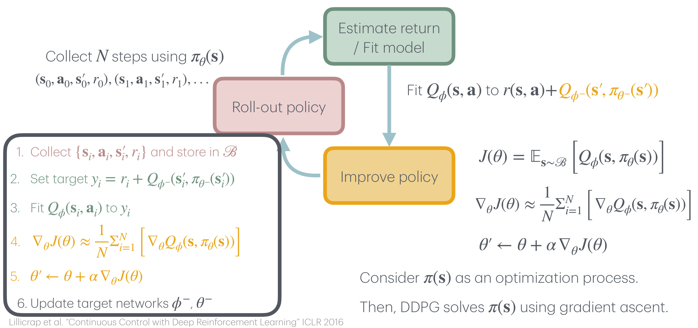
15. DDPG 의사코드 (Algorithm 1: Deep Deterministic Policy Gradient)
제목 없이 알고리즘 상자 하나만 놓인 슬라이드로, 각 줄 오른쪽에 주황색 화살표로 그 줄이 앞에서 배운 어느 장치에 해당하는지를 달아 두었습니다. 상자를 그대로 옮기고 주황색 주석을 # 뒤에 적으면 다음과 같습니다.
Algorithm 1 Deep Deterministic Policy Gradient
──────────────────────────────────────────────────────────────────────────────────
1: Input: initial policy parameters θ, Q-function parameters φ, empty replay buffer D
2: Set target parameters equal to main parameters θ_targ ← θ, φ_targ ← φ
3: repeat
4: Observe state s and select action a = clip(μ_θ(s) + ε, a_Low, a_High),
where ε ~ N # → ε-greedy
5: Execute a in the environment
6: Observe next state s', reward r, and done signal d to indicate whether s' is terminal
7: Store (s, a, r, s', d) in replay buffer D
8: If s' is terminal, reset environment state.
9: if it's time to update then
10: for however many updates do
11: Randomly sample a batch of transitions, B = {(s, a, r, s', d)} from D
12: Compute targets
y(r, s', d) = r + γ(1 − d) Q_φtarg(s', μ_θtarg(s')) # → Target networks for value & policy
13: Update Q-function by one step of gradient descent using
∇_φ (1/|B|) Σ_{(s,a,r,s',d)∈B} (Q_φ(s, a) − y(r, s', d))² # → Q-learning
14: Update policy by one step of gradient ascent using
∇_θ (1/|B|) Σ_{s∈B} Q_φ(s, μ_θ(s)) # → Policy update
15: Update target networks with
φ_targ ← ρ φ_targ + (1 − ρ) φ
θ_targ ← ρ θ_targ + (1 − ρ) θ # → Soft target update
16: end for
17: end if
18: until convergence
──────────────────────────────────────────────────────────────────────────────────15.1 기호가 바뀝니다
의사코드는 앞 슬라이드들과 다른 기호를 씁니다. 가리키는 대상은 같습니다.
| 14절까지의 슬라이드 | 의사코드 | 뜻 |
|---|---|---|
| \(\pi_\theta(\mathbf{s})\) | \(\mu_\theta(s)\) | 결정적 정책 (행위자) |
| \(\phi^-\), \(\theta^-\) | \(\phi_{\text{targ}}\), \(\theta_{\text{targ}}\) | 표적 신경망 |
| \(\mathcal{B}\) (재생 버퍼) | \(\mathcal{D}\) | 재생 버퍼 |
| — | \(B\) | 버퍼에서 뽑은 미니배치 |
| \(y_i\) | \(y(r, s', d)\) | 표적 |
15.2 주석이 달린 다섯 줄
| 줄 | 하는 일 | 주황색 주석 | 앞의 절 |
|---|---|---|---|
| 4 | 결정적 행동에 가우시안 잡음 \(\epsilon\)을 더하고 행동 범위 \([a_{Low}, a_{High}]\)로 자른다 | \(\epsilon\)-greedy | 5절 |
| 12 | 표적 행동과 표적 가치를 모두 표적 신경망으로 계산한다 | Target networks for value & policy | 13절 |
| 13 | 표적을 향해 \(Q_\phi\)를 경사 하강 한 걸음 | Q-learning | 9절 |
| 14 | 배치 상태들에서 \(Q_\phi(s, \mu_\theta(s))\)의 평균을 경사 상승 한 걸음 | Policy update | 11–12절 |
| 15 | 두 표적 신경망을 폴랴크 평균으로 조금씩 끌어당긴다 | Soft target update | 13절 |
세부 몇 가지를 짚어 둡니다.
- 4번 줄의 잡음이 엡실론 탐욕의 역할을 합니다. 결정적 정책은 스스로 탐색하지 않으므로, 데이터를 모을 때만 행동에 잡음을 섞습니다. 주석이 “\(\epsilon\)-greedy”인 것은 역할이 같다는 뜻이며, 여기서의 \(\epsilon\)은 5절의 확률 \(\epsilon\)이 아니라 잡음 자체를 가리키는 기호라는 점에 주의하십시오. 잡음 섞인 행동으로 모은 데이터를 써도 되는 것은 표적이 데이터 수집 정책을 참조하지 않는 오프폴리시 알고리즘이기 때문입니다.
- 12번 줄의 \((1-d)\)는 종료 처리입니다. \(s'\)이 종료 상태이면(\(d = 1\)) 그 뒤로 받을 보상이 없으므로 표적이 \(y = r\)로 줄어들고, 아니면(\(d = 0\)) 평소처럼 \(r + \gamma Q_{\phi_{\text{targ}}}(s', \mu_{\theta_{\text{targ}}}(s'))\)입니다. 이 데크에서 종료 신호가 식에 명시되는 것은 여기가 처음입니다.
- 13·14번 줄은 각각 “한 걸음”입니다. 5절의 \(\arg\min_\phi\)를 끝까지 푸는 대신 경사 한 걸음씩만 나아가고, 대신 10번 줄의 “for however many updates”가 DQN의 안쪽 \(K\) 루프처럼 그 걸음을 여러 번 반복합니다.
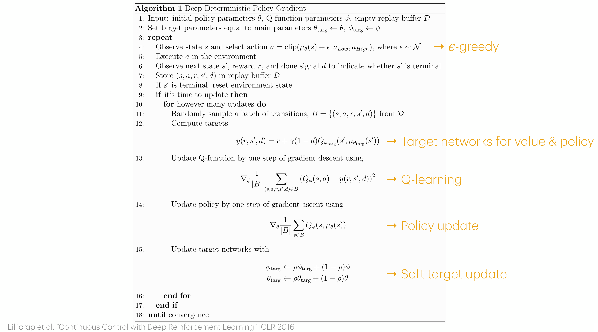
16. DDPG 요약 (Summary of DDPG)
슬라이드는 DDPG를 네 줄로 정리합니다.
- 오프폴리시 행위자–비평가 알고리즘 (Off-policy, actor-critic RL algorithm)
- 행위자는 결정적 정책 \(\pi_\theta\)(의사코드의 \(\mu_\theta\)), 비평가는 \(Q_\phi\)입니다. 04회차의 행위자–비평가와 비교하면 비평가가 \(V\)가 아니라 \(Q\)를 학습하고, 행위자의 경사가 로그 확률 × 이점이 아니라 \(\nabla_{\mathbf{a}} Q_\phi\)에서 온다는 점이 다릅니다.
- 표적 \(r + \gamma Q_{\phi^-}(\mathbf{s}', \pi_{\theta^-}(\mathbf{s}'))\)의 다음 행동은 버퍼에 저장된 행동이 아니라 표적 정책이 새로 고른 행동이므로, 잡음 섞인 탐색 정책이나 과거 정책이 모은 데이터도 그대로 쓸 수 있습니다.
- 연속 행동판 DQN (A continuous action version of DQN)
- 재생 버퍼, 표적 신경망, 탐색 장치라는 DQN의 세 부품을 그대로 쓰고, 계산할 수 없게 된 \(\max\)와 \(\arg\max\)만 정책망으로 대체했습니다(14.2의 표).
- 연속 행동 공간을 가진 환경에서만 동작 (Works only on environments with continuous action spaces)
- 행위자의 학습 신호가 \(\nabla_{\mathbf{a}} Q_\phi\)이므로 행동이 미분 가능한 연속 변수여야 합니다. 행동이 이산이면 이 경사가 정의되지 않고, 애초에 DQN으로 \(\arg\max\)를 정확히 계산할 수 있습니다.
- 초모수에 민감 (Sensitive to hyperparameters)
- 슬라이드는 이유를 따로 적지 않았지만, 이어지는 TD3 부분이 그 불안정성의 원인 두 가지 — \(Q\)의 과대추정과 결정적 정책의 과적합 — 를 진단하고 처방합니다.
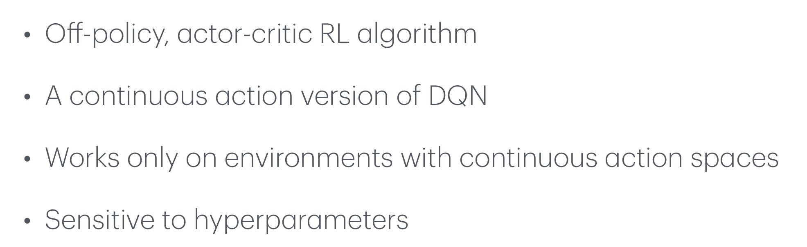
17. DDPG의 Q 과대추정 (DDPG Also Has Overestimation in Q)
계획 슬라이드(20쪽)가 다시 나타나 “TD3”를 진하게 칠합니다. 이 부분의 출처는 Fujimoto et al., Addressing Function Approximation Error in Actor-Critic Methods (ICML 2018)이며, 같은 제목의 슬라이드 두 장(21–22쪽)이 문제·처방과 실험 증거를 나누어 보여 줍니다.
17.1 두 가지 문제
문제 ① 표적의 과대추정 (Issue #1). 슬라이드는 DDPG의 표적에서 다음 상태의 가치 부분을 붉게 칠합니다.
\[ y_i \leftarrow r(\mathbf{s}_i, \mathbf{a}_i) + \underbrace{Q_{\phi^-}\big(\mathbf{s}_i', \pi_{\theta^-}(\mathbf{s}_i')\big)}_{\text{붉게 칠해진 항}} \]
\(\max\) 기호가 사라졌는데 왜 7절의 문제가 남을까요? 정책망은 11.2에서 \(Q_\phi\)를 최대화하도록 학습되었습니다. 그러므로 \(\pi_{\theta^-}(\mathbf{s}')\)은 비평가의 \(\arg\max\)에 대한 근사이고, 붉은 항은 사실상 \(\max_{\mathbf{a}'} Q_{\phi^-}(\mathbf{s}', \mathbf{a}')\)입니다. 경사 상승은 비평가가 우연히 부풀려 추정한 쪽으로 행동을 끌고 가므로, \(\max\)가 양의 오차를 골라내던 일을 이제는 행위자가 합니다. 8절의 Double DQN처럼 선택과 평가를 두 신경망에 나누려 해도, DDPG에서 행동을 고르는 것은 정책망이고 표적 신경망은 현재 신경망을 천천히 따라가는 사본이어서(13.1) 두 쪽의 오차가 쉽게 갈라지지 않습니다.
문제 ② 결정적 정책의 과적합 (Issue #2). 결정적 정책은 잡음 섞인 표적 Q-함수에 빠르게 과적합할 수 있습니다. 12.3에서 본 대가가 여기서 드러납니다. 비평가의 추정에 잡음 때문에 생긴 좁고 뾰족한 봉우리가 있으면, \(\nabla_{\mathbf{a}} Q_\phi\)만 따라가는 결정적 정책은 정확히 그 봉우리로 올라갑니다. 그리고 표적은 바로 그 행동에서 \(Q\)를 읽으므로, 잡음이 표적을 통해 다시 비평가로 되먹임됩니다.
17.2 처방 ① 클리핑된 이중 Q-학습
Q-함수를 두 개 학습하고, 그중 작은 값을 표적으로 씁니다(Learn 2 Q-functions and choose the minimum as target).
\[ \text{"Clipped Double Q-learning"}:\qquad y_i = r(\mathbf{s}, \mathbf{a}) + \gamma \min_{i = 1, 2} Q_{\phi_i^-}\big(\mathbf{s}', \pi_{\theta^-}(\mathbf{s}')\big) \]
슬라이드의 식에서 아래첨자 \(i\)가 두 가지 뜻으로 쓰인다는 점에 주의하십시오. \(y_i\)의 \(i\)는 표본의 번호이고, \(\min_{i=1,2}\)와 \(\phi_i^-\)의 \(i\)는 두 비평가의 번호입니다.
최솟값이 왜 과대추정을 누르는지는 7.1의 부등식을 거울에 비춘 것으로 확인됩니다.
두 확률변수 \(X_1, X_2\)에 대해 \(\ \mathbb{E}\big[\min(X_1, X_2)\big] \ \le\ \min\big(\mathbb{E}[X_1], \mathbb{E}[X_2]\big)\)
증명. 모든 실현값에서 \(\min(X_1, X_2) \le X_1\)이고 \(\min(X_1, X_2) \le X_2\)이므로, 기댓값의 단조성에 의해 \(\mathbb{E}[\min(X_1, X_2)]\)는 \(\mathbb{E}[X_1]\) 이하이면서 \(\mathbb{E}[X_2]\) 이하이고, 따라서 둘 중 작은 값 이하입니다. \(\blacksquare\)
7.1의 가장 작은 예(참값 \(0\), 오차 \(\pm 1\))에서 최솟값은 \((+1,+1)\)일 때만 \(+1\)이고 나머지 세 경우에 \(-1\)이므로 \(\mathbb{E}[\min(X_1, X_2)] = \tfrac14 - \tfrac34 = -\tfrac12\)입니다. \(\max\)가 \(+\tfrac12\)만큼 부풀리던 것을, 두 추정치 중 작은 쪽을 고르면 반대 방향으로 기울게 됩니다. 이름의 “클리핑”은 한 추정치를 다른 추정치로 위에서 잘라 낸다는 뜻으로 읽을 수 있습니다.
최솟값을 쓰면 이번에는 과소추정 쪽으로 기울 수 있습니다. 그런데 행위자는 \(Q\)가 높은 쪽으로 움직이므로, 과소추정된 행동은 선택되지 않고 비껴갑니다. 선택되지 않은 행동의 오차는 표적으로 들어가지 않으니 부트스트랩을 타고 누적될 경로가 없습니다. 반면 과대추정된 행동은 행위자가 찾아가서 고르고, 그 부풀려진 값이 표적이 되어 되먹임됩니다. 두 오차가 대칭이 아닌 이유가 행위자의 최대화에 있는 것입니다.
17.3 처방 ② 느린 정책 갱신과 표적 정책 평활화
문제 ②에 대해서는 두 가지 처방이 붙습니다.
- Solution #2a — 느린 정책 갱신(slow policy updates). 비평가를 정책보다 더 자주 갱신합니다(update critic more often). 정책이 한 걸음 움직이기 전에 비평가가 여러 번 회귀하며 오차를 줄여 두므로, 정책은 순간순간의 잡음이 아니라 어느 정도 안정된 \(Q\)를 따라가게 됩니다.
- Solution #2b — 표적 정책 평활화(smooth target policy). 표적 행동에 잡음을 섞습니다.
\[ \mathbf{a}' = \pi_{\theta^-}(\mathbf{s}') + \epsilon, \qquad \epsilon \sim \mathcal{N}(0, \sigma) \]
잡음 섞인 행동으로 계산한 표적을 여러 번 쓰면, 평균적으로는 \(r + \gamma\,\mathbb{E}_{\epsilon}\big[Q(\mathbf{s}', \pi_{\theta^-}(\mathbf{s}') + \epsilon)\big]\)을 표적으로 삼는 셈입니다. 즉 표적 행동 한 점이 아니라 그 주변 행동들의 평균 가치를 읽는 것이고, 좁고 뾰족한 가짜 봉우리는 주변과 평균되면서 영향력을 잃습니다. 슬라이드의 표현대로 \(Q\)-함수의 오차를 이용하기(exploiting errors) 어렵게 만드는 것입니다. 18절의 의사코드는 여기에 더해 잡음과 행동을 각각 일정 범위로 자릅니다.
17.4 실험: 추정치와 실제 값
두 번째 슬라이드는 원논문의 그래프 두 장으로 처방 ①의 효과를 보여 줍니다. 가로축은 학습 스텝(백만 단위, \(0\)–\(1.0\)), 세로축은 평균 가치(Average Value)입니다.
| 환경 | DDPG 추정치 | DDPG 실제 값 | CDQ 추정치 | CDQ 실제 값 |
|---|---|---|---|---|
| Hopper-v1 | 약 \(350\)까지 상승 | 약 \(270\) | 약 \(300\) | 약 \(300\)–\(310\) |
| Walker2d-v1 | 약 \(430\)까지 상승 | 약 \(300\) | 약 \(400\) | 약 \(400\) |
(값은 \(100\)만 스텝 부근을 그래프에서 읽은 대략치입니다.) DDPG의 추정치는 두 환경 모두에서 실제 값보다 뚜렷하게 위에 있고 그 격차가 학습 후반까지 줄지 않는 반면, 클리핑된 이중 Q-학습(CDQ)의 추정치는 실제 값과 거의 겹칩니다. Hopper에서는 학습 후반 CDQ 추정치가 실제 값보다 약간 아래에 머무는데, 17.2에서 본 최솟값의 하향 편향과 맞아떨어지는 모습입니다. 슬라이드의 결론은 “Clipped double Q-learning resolves overestimation bias”입니다.
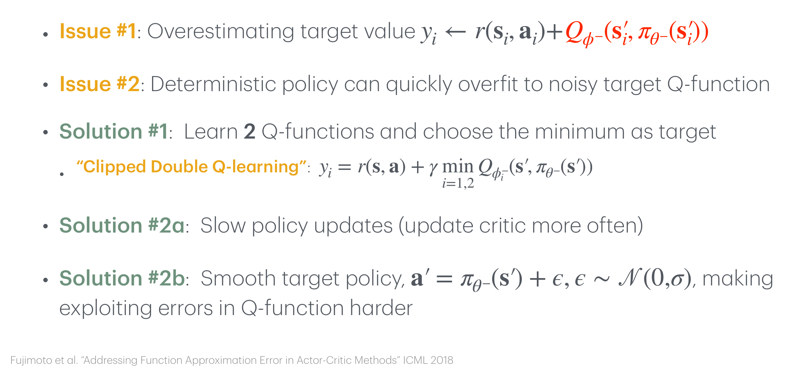
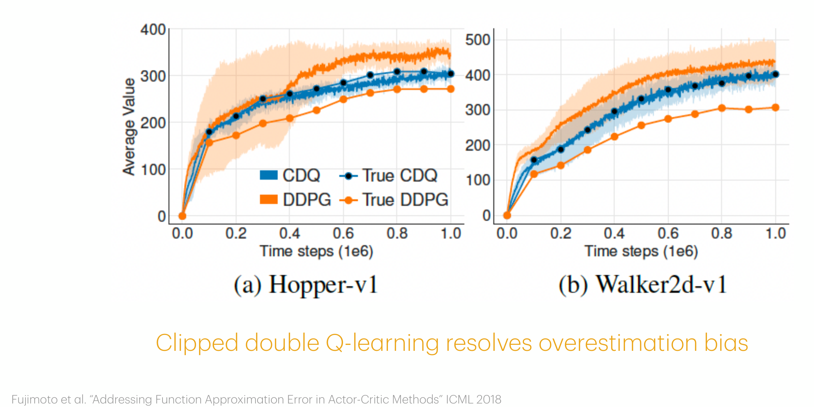
18. TD3 의사코드 (Algorithm 1: Twin Delayed DDPG)
17절의 세 처방을 DDPG 의사코드에 넣은 것이 Twin Delayed DDPG, 곧 TD3입니다. 이름 그대로 쌍둥이(Twin) 비평가와 지연된(Delayed) 정책 갱신을 얹은 DDPG입니다. 슬라이드는 처방이 들어간 세 곳에 주황색 테두리를 두르고 이름을 달았습니다.
Algorithm 1 Twin Delayed DDPG
──────────────────────────────────────────────────────────────────────────────────
1: Input: initial policy parameters θ, Q-function parameters φ1, φ2, empty replay buffer D
2: Set target parameters equal to main parameters θ_targ ← θ, φ_targ,1 ← φ1, φ_targ,2 ← φ2
3: repeat
4: Observe state s and select action a = clip(μ_θ(s) + ε, a_Low, a_High), where ε ~ N
5: Execute a in the environment
6: Observe next state s', reward r, and done signal d to indicate whether s' is terminal
7: Store (s, a, r, s', d) in replay buffer D
8: If s' is terminal, reset environment state.
9: if it's time to update then
10: for j in range(however many updates) do
11: Randomly sample a batch of transitions, B = {(s, a, r, s', d)} from D
12: Compute target actions
a'(s') = clip(μ_θtarg(s') + clip(ε, −c, c), a_Low, a_High), ε ~ N(0, σ)
# → Target policy smoothing
13: Compute targets
y(r, s', d) = r + γ(1 − d) min_{i=1,2} Q_φtarg,i(s', a'(s'))
# → Clipped double Q-learning
14: Update Q-functions by one step of gradient descent using
∇_φi (1/|B|) Σ_{(s,a,r,s',d)∈B} (Q_φi(s, a) − y(r, s', d))² for i = 1, 2
15: if j mod policy_delay = 0 then # → Delayed policy updates
16: Update policy by one step of gradient ascent using
∇_θ (1/|B|) Σ_{s∈B} Q_φ1(s, μ_θ(s))
17: Update target networks with
φ_targ,i ← ρ φ_targ,i + (1 − ρ) φ_i for i = 1, 2
θ_targ ← ρ θ_targ + (1 − ρ) θ
18: end if
19: end for
20: end if
21: until convergence
──────────────────────────────────────────────────────────────────────────────────18.1 DDPG에서 바뀐 곳
| 줄 | DDPG (15절) | TD3 | 처방 |
|---|---|---|---|
| 1–2 | 비평가 \(\phi\) 하나와 그 표적 | 비평가 \(\phi_1, \phi_2\) 둘과 각각의 표적 | 쌍둥이 비평가 |
| 12 | 표적 행동 \(= \mu_{\theta_{\text{targ}}}(s')\) | \(a'(s') = \mathrm{clip}\big(\mu_{\theta_{\text{targ}}}(s') + \mathrm{clip}(\epsilon, -c, c), a_{Low}, a_{High}\big)\) | 표적 정책 평활화 (#2b) |
| 13 | \(r + \gamma(1-d)\, Q_{\phi_{\text{targ}}}(s', \mu_{\theta_{\text{targ}}}(s'))\) | \(r + \gamma(1-d) \min_{i=1,2} Q_{\phi_{\text{targ},i}}(s', a'(s'))\) | 클리핑된 이중 Q-학습 (#1) |
| 14 | 비평가 하나를 표적으로 회귀 | 두 비평가 모두 같은 표적 \(y\)로 회귀 | — |
| 15–17 | 매 반복 정책·표적 갱신 | \(j\)가 policy_delay의 배수일 때만 정책과 표적 갱신 |
지연된 정책 갱신 (#2a) |
몇 가지 세부를 짚어 둡니다.
- 12번 줄의 두 겹 클리핑. 안쪽 \(\mathrm{clip}(\epsilon, -c, c)\)는 평활화 잡음의 크기를 \(c\) 이내로 묶어, 표적 행동이 원래 행동의 가까운 이웃 안에 머물게 합니다. 바깥 \(\mathrm{clip}(\cdot, a_{Low}, a_{High})\)는 결과가 유효한 행동 범위를 벗어나지 않게 합니다. 17.3의 슬라이드에는 이 두 클리핑이 없었고 의사코드에서 추가된 것입니다.
- 14번 줄에서 두 비평가는 같은 표적을 공유합니다. 표적 \(y\)는 두 표적 비평가의 최솟값으로 한 번만 계산되고, \(\phi_1\)과 \(\phi_2\)가 모두 그것을 향해 회귀합니다.
- 16번 줄의 정책 갱신은 \(Q_{\phi_1}\) 하나만 씁니다. 최솟값은 표적을 만들 때만 쓰입니다.
- 17번 줄의 표적 갱신도 지연 블록 안에 있습니다. 정책이 움직일 때만 표적 신경망들도 따라 움직입니다.
- 4번 줄의 탐색은 DDPG와 같습니다. 세 처방은 모두 학습 블록 안의 변경이며, 환경과 상호작용하는 부분은 그대로입니다.
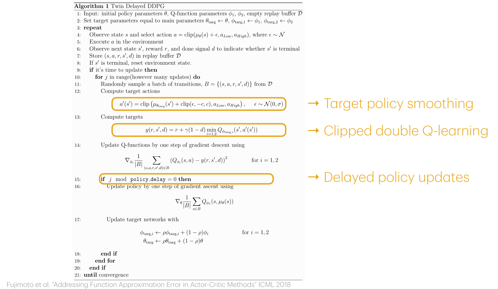
19. TD3 요약 (Summary of TD3)
19.1 MuJoCo 실험 결과
제목 없는 24쪽은 원논문의 학습 곡선 일곱 장을 보여 줍니다. 모두 MuJoCo 연속 제어 과제이며, 가로축은 학습 스텝(백만 단위, \(0\)–\(1.0\)), 세로축은 평균 반환값입니다. 범례는 TD3(파랑), DDPG(주황), our DDPG(초록), PPO(빨강), TRPO(보라), ACKTR(갈색), SAC(분홍)이고, 원논문의 도표이므로 “our DDPG”는 TD3 저자들이 구현한 DDPG를 가리킵니다.
| 과제 | TD3 (100만 스텝 부근) | 눈에 띄는 점 |
|---|---|---|
| (a) HalfCheetah-v1 | 약 \(9{,}500\) | 두 번째인 our DDPG(약 \(8{,}400\))와 원래 DDPG(약 \(3{,}200\))의 격차가 크다 |
| (b) Hopper-v1 | 약 \(3{,}300\) | 두 번째는 SAC(약 \(2{,}600\)) |
| (c) Walker2d-v1 | 약 \(4{,}600\) | 두 번째인 PPO가 약 \(3{,}000\) |
| (d) Ant-v1 | 약 \(4{,}200\) | 두 번째인 ACKTR이 약 \(1{,}800\) |
| (e) Reacher-v1 | 약 \(-4\) (가장 높음) | 반환값이 음수인 과제로, \(0\)에 가까울수록 좋다 |
| (f) InvertedPendulum-v1 | 약 \(1{,}000\) | 대부분의 방법이 상한 근처에 모인다 |
| (g) InvertedDoublePendulum-v1 | 약 \(8{,}700\) | DDPG(약 \(9{,}200\))가 TD3보다 높은 유일한 과제 |
(값은 그래프에서 읽은 대략치입니다.) TD3는 일곱 과제 중 다섯에서 뚜렷하게 가장 높고, 쉬운 과제(InvertedPendulum)에서는 다른 방법들과 비슷하며, InvertedDoublePendulum에서만 DDPG에 조금 뒤집니다. 이 도표에서 SAC(분홍)는 대체로 중하위권에 머문다는 점도 기억해 둘 만합니다 — 28절에서 SAC 논문의 도표와 나란히 놓였을 때 이 점이 다시 문제가 됩니다.
19.2 요약
- 개선된 DDPG (Improved DDPG)
- 학습 안정성을 높이는 세 장치 (Improves training stability using)
- 클리핑된 이중 Q-학습 (Clipped double q-learning)
- 지연된 정책 갱신 (Delayed policy updates)
- 표적 정책 평활화 (Target policy smoothing)
- 실제로 잘 동작한다 (Works well in practice!)
- 연속 행동을 위한 최신(state-of-the-art) 오프폴리시 강화학습 알고리즘 (The state-of-the-art off-policy RL algorithm for continuous actions)
| 장치 | 겨냥하는 문제 | 의사코드 위치 |
|---|---|---|
| 클리핑된 이중 Q-학습 | 표적의 과대추정 (Issue #1) | 13번 줄 |
| 지연된 정책 갱신 | 부정확한 비평가를 정책이 쫓아가는 것 (Issue #2) | 15번 줄 |
| 표적 정책 평활화 | 비평가의 뾰족한 오차를 표적이 이용하는 것 (Issue #2) | 12번 줄 |
DDPG의 정책은 비평가의 경사를 그대로 믿고 따라갔고(12.3), 그 믿음이 과대추정과 과적합으로 돌아왔습니다. TD3의 세 장치는 각각 두 비평가 중 비관적인 쪽을 믿고(최솟값), 비평가가 충분히 학습될 때까지 기다렸다 믿고(지연), 한 점이 아니라 주변의 평균을 믿는(평활화) 방식으로 그 믿음에 제동을 겁니다. 새로운 학습 원리를 도입한 것이 아니라, 함수 근사 오차가 정책을 통해 증폭되는 경로를 하나씩 막은 것입니다.
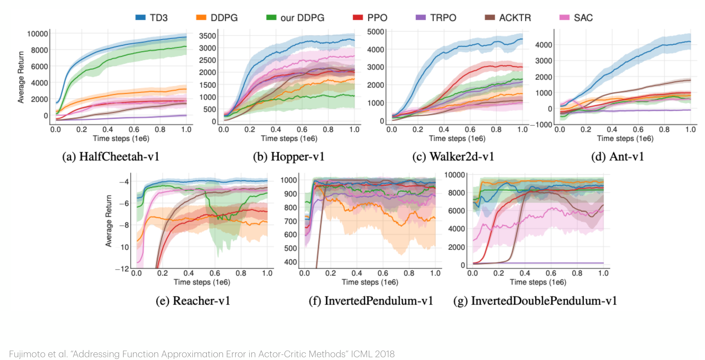
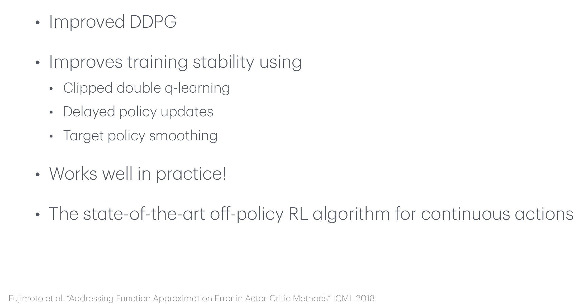
20. 확률적 정책을 쓸 수 있을까 (Can We Use Stochastic Policy?)
계획 슬라이드(26쪽)가 마지막으로 나타나 “SAC”를 진하게 칠합니다. 이 부분(27–35쪽)의 출처는 Haarnoja et al., Soft Actor-Critic: Off-Policy Maximum Entropy Deep Reinforcement Learning with a Stochastic Actor (ICML 2018)입니다.
20.1 결정적 정책에서 확률적 정책으로
- DDPG와 TD3는 결정적 정책 \(\pi_\theta(\mathbf{s})\)를 씁니다.
- 같은 일을 확률적 정책으로도 할 수 있습니다.
\[ \pi_\theta(\mathbf{a} \mid \mathbf{s}) = \mathcal{N}\big(\mu(\mathbf{s}), \sigma(\mathbf{s})^2\big) \]
정책망이 행동 하나 대신 가우시안 분포의 평균 \(\mu(\mathbf{s})\)와 표준편차 \(\sigma(\mathbf{s})\)를 내놓는 것입니다. 슬라이드는 \(\sigma(\mathbf{s})\)에 주황색 원을 치고 “Stochasticity!”라 적습니다 — 결정적 정책과의 차이는 오직 이 항에 있고, 탐색을 바깥에서 잡음으로 덧붙이던 DDPG·TD3와 달리 정책 자체가 무작위성을 갖게 됩니다. 곧바로 이어지는 질문은 “How do we learn this?”입니다.
20.2 보상만 최대화하면 \(\sigma\)는 \(0\)으로 간다
슬라이드의 답은 부정적입니다 — 보상을 단순히 최대화하면 \(\sigma\)가 \(0\)으로 가는 경우가 많습니다(Simply maximizing reward often leads \(\sigma\) to 0). 왜 그런지 한 상태 \(\mathbf{s}\)에서 1차원 행동으로 확인해 보겠습니다. 정책이 최대화하는 양은 \(\mathbb{E}_{a \sim \mathcal{N}(\mu, \sigma^2)}[Q(\mathbf{s}, a)]\)입니다.
1단계 (표준화). \(a = \mu + \sigma\varepsilon\), \(\varepsilon \sim \mathcal{N}(0, 1)\)로 쓰면 \(a \sim \mathcal{N}(\mu, \sigma^2)\)입니다.
2단계 (2차 테일러 전개). \(Q(\mathbf{s}, \cdot)\)를 \(\mu\) 근방에서 전개하면
\[ Q(\mathbf{s}, \mu + \sigma\varepsilon) \approx Q(\mathbf{s}, \mu) + \sigma\varepsilon\, Q'(\mu) + \tfrac12 \sigma^2 \varepsilon^2\, Q''(\mu) \]
입니다. 여기서 \(Q'\), \(Q''\)은 행동에 대한 1·2계 도함수입니다.
3단계 (기댓값). \(\mathbb{E}[\varepsilon] = 0\), \(\mathbb{E}[\varepsilon^2] = 1\)이므로
\[ \mathbb{E}_{a \sim \mathcal{N}(\mu, \sigma^2)}\big[Q(\mathbf{s}, a)\big] \approx Q(\mathbf{s}, \mu) + \tfrac12 \sigma^2\, Q''(\mu) \]
4단계 (해석). \(\mu\)가 \(Q\)의 봉우리 근처에 있으면 \(Q''(\mu) < 0\)이므로 둘째 항은 음수이고, \(\sigma\)가 클수록 더 작아집니다. 즉 \(\sigma\)에 대한 경사 \(\sigma Q''(\mu)\)가 항상 음수여서 경사 상승은 \(\sigma\)를 줄이는 쪽으로만 움직입니다. 행동 차원이 여럿이고 공분산이 대각 \(\mathrm{diag}(\sigma_1^2, \ldots, \sigma_m^2)\)이면 둘째 항이 \(\tfrac12 \sum_j \sigma_j^2\, \partial^2 Q / \partial a_j^2\)가 되어 같은 결론이 각 차원에 성립합니다.
직관적으로는 당연합니다. 최선의 행동이 하나라면 그 주변으로 흩어지는 것은 손해일 뿐이므로, 보상만 보는 정책은 무작위성을 스스로 버리고 결정적 정책으로 붕괴합니다. 그러면 20.1에서 얻으려던 내장된 탐색도 함께 사라집니다. 무작위성을 유지하려면 무작위성 자체에 값을 매기는 항이 목적함수에 있어야 하고, 그것이 다음 절의 엔트로피입니다.
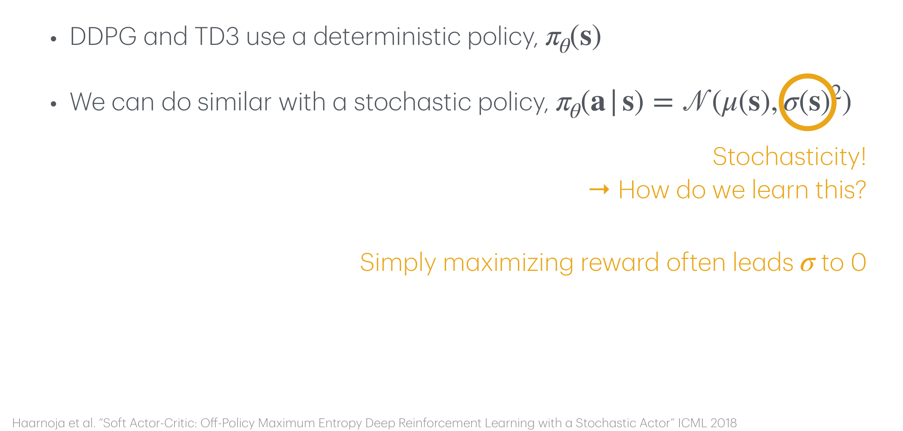
21. 최대 엔트로피 강화학습 (Maximum Entropy RL)
21.1 엔트로피 보너스
- DQN은 탐색을 위해 엡실론 탐욕 전략을 씁니다.
- 연속 행동 공간의 확률적 정책에서는 “엔트로피 보너스(entropy bonus)”가 그럴듯한 접근이 될 수 있습니다.
\[ \textbf{기존 강화학습 목적함수:}\qquad \mathbb{E}_{\tau \sim \pi_\theta(\tau)}\Big[\sum_t r(\mathbf{s}_t, \mathbf{a}_t)\Big] \]
\[ \textbf{최대 엔트로피 강화학습 목적함수:}\qquad \mathbb{E}_{\tau \sim \pi_\theta(\tau)}\Big[\sum_t r(\mathbf{s}_t, \mathbf{a}_t) + \alpha\, H\big(\pi(\cdot \mid \mathbf{s}_t)\big)\Big] \]
엔트로피 항에도 시점 첨자 \(t\)가 붙어 있으므로, 합은 두 항 모두에 걸린다고 읽습니다. 즉 매 스텝 보상에 더해 그 상태에서의 정책 엔트로피를 가중치 \(\alpha\)만큼 보너스로 받습니다. 정책의 엔트로피는
\[ H(\pi) = \mathbb{E}_{\tau \sim \pi(\tau)}\big[-\log \pi(\mathbf{a}_t \mid \mathbf{s}_t)\big] \]
로, 정책이 고른 행동의 음의 로그 확률의 평균, 곧 정책의 무작위성을 잽니다. 슬라이드의 표현대로 정책이 “엔트로피”(정책의 무작위성)도 최대화하도록 학습시키는 것입니다.
21.2 가우시안 정책의 엔트로피
20절의 가우시안 정책에 대해 엔트로피를 직접 계산해 보면 이 보너스가 \(\sigma\)를 어떻게 지켜 주는지가 보입니다. 1차원에서
\[ \log \mathcal{N}(a; \mu, \sigma^2) = -\tfrac12 \log(2\pi\sigma^2) - \frac{(a - \mu)^2}{2\sigma^2} \]
이므로, 음의 기댓값을 취하고 \(\mathbb{E}[(a-\mu)^2] = \sigma^2\)을 쓰면
\[ H = \tfrac12 \log(2\pi\sigma^2) + \frac{\sigma^2}{2\sigma^2} = \tfrac12 \log(2\pi e\, \sigma^2) \]
입니다. \(\sigma \to 0\)이면 \(H \to -\infty\)입니다. 즉 엔트로피 보너스는 정책이 결정적으로 붕괴하는 것을 한없이 크게 벌점하고, 20.2에서 \(\sigma\)를 \(0\)으로 끌어내리던 힘에 맞서는 힘이 됩니다.
20.2의 근사와 21.2의 엔트로피를 합쳐 한 상태에서의 목적함수를 쓰고, 봉우리의 날카로움을 \(Q''(\mu) = -\kappa\) (\(\kappa > 0\))로 두면
\[ \underbrace{Q(\mathbf{s}, \mu) - \tfrac12 \kappa\, \sigma^2}_{\text{보상 쪽: } \sigma \text{를 줄이고 싶다}} + \underbrace{\tfrac{\alpha}{2}\log(2\pi e\,\sigma^2)}_{\text{엔트로피 쪽: } \sigma \text{를 키우고 싶다}} \]
입니다. \(\sigma\)로 미분해 \(0\)으로 두면 \(-\kappa\sigma + \alpha/\sigma = 0\), 곧
\[ \sigma^{\ast 2} = \frac{\alpha}{\kappa} \]
를 얻습니다(이 계산은 슬라이드에 없는 보충 유도입니다). \(\alpha\)가 클수록 더 무작위하게, \(Q\)의 봉우리가 날카로울수록(행동을 조금만 틀려도 손해가 클수록) 덜 무작위하게 행동하는 것이 최적이라는 뜻입니다. 정책이 상태마다 “얼마나 흩어져도 괜찮은가”를 스스로 정하게 되는 셈이며, \(\alpha\)가 그 저울의 눈금입니다(25절).
21.3 엡실론 탐욕과 무엇이 다른가
| 엡실론 탐욕 (DQN) · 행동 잡음 (DDPG, TD3) | 엔트로피 보너스 (최대 엔트로피 강화학습) | |
|---|---|---|
| 탐색이 들어가는 곳 | 목적함수 바깥 (데이터 수집 규칙) | 목적함수 안 |
| 무작위성의 크기 | 사람이 정한 \(\epsilon\) 또는 잡음 분산 (스케줄) | 정책이 보상과 저울질해 상태마다 학습 |
| 학습되는 정책 | 결정적 (탐색은 덧붙임) | 확률적 (탐색이 정책의 일부) |
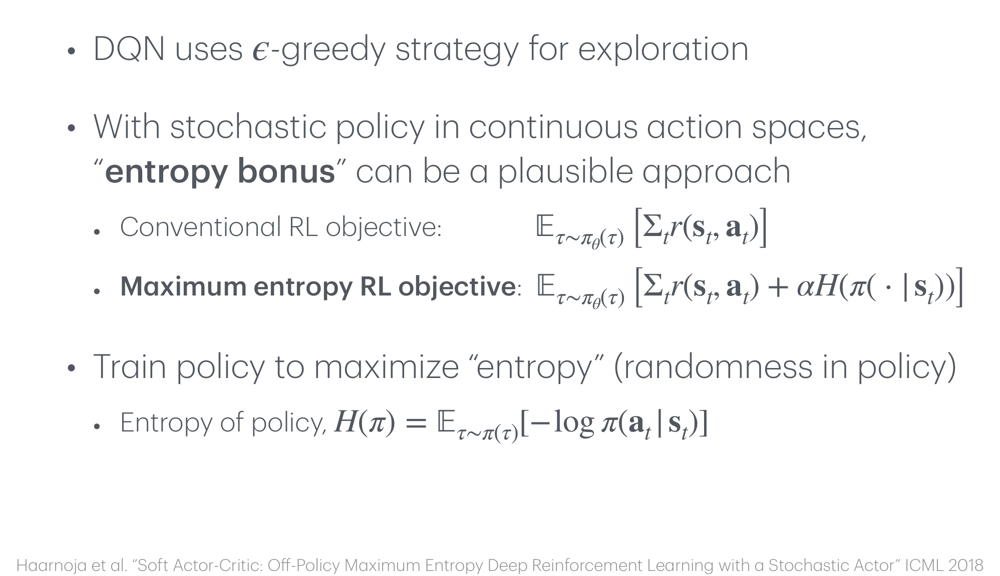
22. 왜 더 무작위한 정책을 선호하는가 (Why Is More Random Policy Preferred?)
엔트로피를 최대화한다는 것은 필요 이상으로 무작위하게 행동하겠다는 뜻처럼 들립니다. 슬라이드는 그것이 왜 이득인지를 두 문장과 그림 한 쌍으로 설명합니다.
- 해를 하나만 아는 정책은 국소 최적에 빠지기 쉽고, 환경 변화에 강건하지 않습니다. (Knowing only one solution can easily fall into local optima and is not robust to environmental changes)
- 엔트로피 최대화는 서로 다른 해의 여러 봉우리(modes)를 붙잡는 데 도움이 됩니다. (Maximizing entropy helps capture different modes of solutions)
- \((+)\) 다양한 해를 배우면 정책이 강건해집니다.
- \((+)\) 이는 탐색도 촉진합니다!
22.1 그림 읽기
두 장의 미로 그림에서 네 다리 로봇(ant)이 왼쪽에서 출발해 오른쪽 위의 파란 \(\times\) 표시(목표)로 가야 하고, 가운데에 붉은 가로 벽이 놓여 있습니다.
- 왼쪽 그림: 로봇은 벽 위쪽으로 돌아가는 경로를 배웠습니다. 이 환경에서는 그 경로 하나로 충분합니다.
- 오른쪽 그림: 목표 앞에 세로 벽이 새로 생겨 위쪽 경로가 막혔습니다(위쪽 화살표가 벽에 가로막힙니다). 이때 목표에 닿을 수 있는 것은 벽 아래쪽으로 돌아 올라가는 경로뿐입니다.
위쪽 경로만 아는 정책은 오른쪽 환경에서 처음부터 다시 배워야 하지만, 두 경로의 반환값이 비슷했던 왼쪽 환경에서 두 경로 모두에 확률을 나누어 실어 둔 정책은 이미 아래쪽 경로를 알고 있습니다. 엔트로피 보너스가 바로 그런 분산 투자를 장려합니다 — 반환값이 비슷한 해가 여럿이면, 하나에 몰아주는 것보다 나누어 싣는 쪽의 엔트로피가 더 크기 때문입니다. 여러 경로를 실제로 시도해 보게 되므로 탐색이 늘어나는 것은 덤입니다.
20절의 가우시안 정책은 상태마다 봉우리가 하나뿐인 분포입니다. 따라서 한 상태에서 “위로도 아래로도 갈 수 있다”는 두 봉우리를 동시에 표현하는 데는 한계가 있고, 이 경우 엔트로피 보너스는 주로 하나의 봉우리를 넓게 유지하는 방식으로 작용합니다. “여러 해의 봉우리를 붙잡는다”는 논지는 목적함수가 주는 방향이며, 실제로 얼마나 붙잡을 수 있는지는 정책 분포의 표현력에 달려 있습니다.
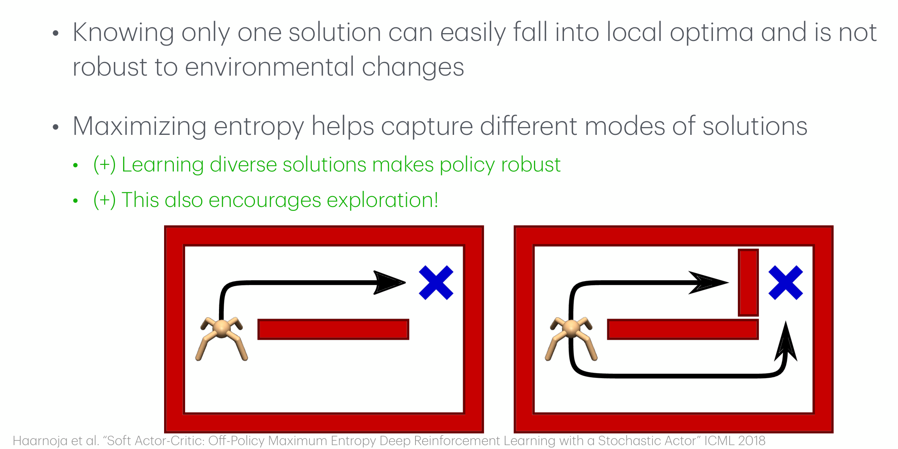
23. 소프트 Q-값 (Soft Q-Value)
목적함수에 엔트로피를 넣었으니, 그 목적함수에 맞는 가치 함수와 벨만 방정식이 필요합니다.
23.1 상태 가치에 엔트로피 항 하나를 더한다
벨만 방정식을 다음 상태의 가치 \(V\)를 거쳐 쓰면
\[ Q(\mathbf{s}_t, \mathbf{a}_t) \leftarrow r(\mathbf{s}_t, \mathbf{a}_t) + \gamma\, \mathbb{E}_{\mathbf{s}_{t+1} \sim p(\mathbf{s}_{t+1} \mid \mathbf{s}_t, \mathbf{a}_t)}\big[V(\mathbf{s}_{t+1})\big] \]
이고, 달라지는 것은 \(V\)의 정의뿐입니다.
\[ \textbf{기존 Q-반복:}\qquad V(\mathbf{s}_{t+1}) = \mathbb{E}_{\mathbf{a}_{t+1} \sim \pi(\cdot \mid \mathbf{s}_{t+1})}\big[Q(\mathbf{s}_{t+1}, \mathbf{a}_{t+1})\big] \]
\[ \textbf{소프트 Q-반복:}\qquad V(\mathbf{s}_{t+1}) = \mathbb{E}_{\mathbf{a}_{t+1} \sim \pi(\cdot \mid \mathbf{s}_{t+1})}\big[Q(\mathbf{s}_{t+1}, \mathbf{a}_{t+1}) - \alpha \log \pi(\mathbf{a}_{t+1} \mid \mathbf{s}_{t+1})\big] \]
기존 식은 정책 \(\pi\) 아래의 기댓값이며, 3절에서는 정책이 탐욕적이었기 때문에 이 기댓값이 \(\max\)가 되었습니다. 소프트 식은 그 안에 \(-\alpha \log \pi\) 한 항을 더합니다. 슬라이드는 \(\alpha\)에 주황색 원을 치고 온도 파라미터(temperature parameter)라 부르며, \(-\log \pi\) 부분에 밑줄을 긋고 그것이 엔트로피 \(H(\pi) = \mathbb{E}_{\tau \sim \pi(\tau)}[-\log \pi(\mathbf{a}_t \mid \mathbf{s}_t)]\)의 재료임을 밝힙니다.
23.2 소프트 상태 가치 = 기대 \(Q\) + 엔트로피 보너스
기댓값의 선형성으로 두 항을 나누면
\[ V(\mathbf{s}_{t+1}) = \mathbb{E}_{\mathbf{a}_{t+1} \sim \pi}\big[Q(\mathbf{s}_{t+1}, \mathbf{a}_{t+1})\big] + \alpha\, \underbrace{\mathbb{E}_{\mathbf{a}_{t+1} \sim \pi}\big[-\log \pi(\mathbf{a}_{t+1} \mid \mathbf{s}_{t+1})\big]}_{=\ H(\pi(\cdot \mid \mathbf{s}_{t+1}))} \]
입니다. 다음 상태에 도착하는 순간 그 상태에서의 정책 엔트로피만큼 보너스를 받는다는 뜻입니다.
23.3 펼쳐 보면 21절의 목적함수가 나온다
이 재귀를 반복해서 펼치면 소프트 Q-값이 무엇을 세는지 드러납니다. 기댓값 기호를 생략하고 \(H_{t+k} \equiv H(\pi(\cdot \mid \mathbf{s}_{t+k}))\)로 줄여 쓰면
\[ \begin{aligned} Q(\mathbf{s}_t, \mathbf{a}_t) &= r_t + \gamma\big(\alpha H_{t+1} + Q(\mathbf{s}_{t+1}, \mathbf{a}_{t+1})\big) \\ &= r_t + \gamma\alpha H_{t+1} + \gamma r_{t+1} + \gamma^2\big(\alpha H_{t+2} + Q(\mathbf{s}_{t+2}, \mathbf{a}_{t+2})\big) \\ &\ \ \vdots \\ &= \mathbb{E}\Big[\sum_{k=0}^{\infty} \gamma^k r_{t+k} + \alpha \sum_{k=1}^{\infty} \gamma^k H_{t+k} \ \Big|\ \mathbf{s}_t, \mathbf{a}_t\Big] \end{aligned} \]
입니다. 소프트 Q-값은 \((\mathbf{s}_t, \mathbf{a}_t)\)에서 출발해 얻는 (할인된) 보상과 엔트로피 보너스의 합, 곧 21절의 최대 엔트로피 목적함수 그 자체입니다. 엔트로피 합이 \(k = 1\)부터 시작하는 것은 첫 행동 \(\mathbf{a}_t\)가 이미 주어져 있어 그 시점의 무작위성은 셈에 들어가지 않기 때문입니다. 따라서 이 벨만 방정식을 반복 적용하는 소프트 Q-반복은 최대 엔트로피 목적함수 아래에서 정책을 평가하는 절차가 됩니다.
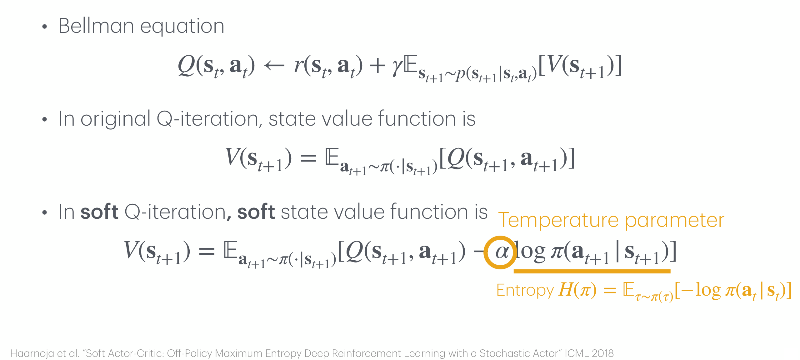
24. 소프트 정책 반복 (Soft Policy Iteration)
2절의 정책 반복이 “평가 → 개선”의 순환이었듯, 소프트 정책 반복도 소프트 정책 평가와 소프트 정책 개선을 번갈아 합니다. 둘 다 신경망 위의 손실함수로 적힙니다.
24.1 소프트 정책 평가: 소프트 Q-갱신
\[ J_Q(\phi) = \mathbb{E}_{(\mathbf{s}_t, \mathbf{a}_t) \sim \mathcal{D}}\Big[\tfrac12\big(Q_\phi(\mathbf{s}_t, \mathbf{a}_t) - y_t\big)^2\Big], \qquad y_t = r(\mathbf{s}_t, \mathbf{a}_t) + \gamma\Big(Q_{\phi^-}(\mathbf{s}_{t+1}, \mathbf{a}_{t+1}) - \alpha \log \pi_\theta(\mathbf{a}_{t+1} \mid \mathbf{s}_{t+1})\Big) \]
\(y_t\)는 23.1의 소프트 벨만 표적 \(r + \gamma\,\mathbb{E}_{\mathbf{a}_{t+1} \sim \pi_\theta}[Q - \alpha \log \pi_\theta]\)를 표본 하나로 근사한 것이고(3절 4단계와 같은 발상), \(\tfrac12\)은 미분했을 때 경사가 \((Q_\phi - y_t)\nabla_\phi Q_\phi\)로 깔끔해지도록 붙인 상수입니다. 여기서 중요한 세부가 하나 있습니다 — \((\mathbf{s}_t, \mathbf{a}_t, r_t, \mathbf{s}_{t+1})\)은 재생 버퍼 \(\mathcal{D}\)에서 오지만, 다음 행동 \(\mathbf{a}_{t+1}\)은 버퍼가 아니라 현재 정책 \(\pi_\theta(\cdot \mid \mathbf{s}_{t+1})\)에서 새로 뽑습니다(26절 의사코드 12번 줄의 \(\tilde{\mathbf{a}}' \sim \pi_\theta(\cdot \mid \mathbf{s}')\)). 표적이 데이터를 모은 정책을 참조하지 않으므로, 9절에서 본 오프폴리시 성질이 그대로 유지됩니다.
24.2 소프트 정책 개선
정책은 다음 손실을 최소화하도록 갱신됩니다.
\[ J_\pi(\theta) = \mathbb{E}_{\mathbf{s}_t \sim \mathcal{D}}\Big[\mathbb{E}_{\mathbf{a}_t \sim \pi_\theta(\cdot \mid \mathbf{s}_t)}\big[\alpha \log \pi_\theta(\mathbf{a}_t \mid \mathbf{s}_t) - Q_\phi(\mathbf{s}_t, \mathbf{a}_t)\big]\Big] \]
부호를 뒤집으면 슬라이드의 주황색 화살표가 가리키는 대로 \(Q_\phi(\mathbf{s}_t, \mathbf{a}_t) - \alpha \log \pi_\theta(\mathbf{a}_t \mid \mathbf{s}_t)\)를 최대화하는 것과 같습니다. 그리고 23.2에 따라 그 기댓값은 정확히 소프트 상태 가치입니다.
\[ -J_\pi(\theta) = \mathbb{E}_{\mathbf{s}_t \sim \mathcal{D}}\Big[\underbrace{\mathbb{E}_{\mathbf{a}_t \sim \pi_\theta}\big[Q_\phi(\mathbf{s}_t, \mathbf{a}_t)\big] + \alpha H\big(\pi_\theta(\cdot \mid \mathbf{s}_t)\big)}_{\text{소프트 상태 가치 } V(\mathbf{s}_t)}\Big] \]
즉 소프트 정책 개선은 각 상태의 소프트 가치를 끌어올리는 방향으로 정책을 옮기는 것이며, 2절에서 탐욕 정책이 \(Q\)의 최댓값을 고르던 일의 “소프트” 판입니다.
한 상태 \(\mathbf{s}\)에서 \(J_\pi\)의 안쪽 기댓값을 정리해 보겠습니다(슬라이드에 없는 보충 유도입니다). \(Z(\mathbf{s}) = \int \exp\big(Q(\mathbf{s}, \mathbf{a})/\alpha\big)\, d\mathbf{a}\)로 두면
\[ \begin{aligned} \mathbb{E}_{\mathbf{a} \sim \pi}\big[\alpha \log \pi(\mathbf{a} \mid \mathbf{s}) - Q(\mathbf{s}, \mathbf{a})\big] &= \alpha\, \mathbb{E}_{\mathbf{a} \sim \pi}\Big[\log \pi(\mathbf{a} \mid \mathbf{s}) - \log \frac{\exp(Q(\mathbf{s}, \mathbf{a})/\alpha)}{Z(\mathbf{s})}\Big] - \alpha \log Z(\mathbf{s}) \\ &= \alpha\, D_{\mathrm{KL}}\Big(\pi(\cdot \mid \mathbf{s})\ \Big\Vert\ \frac{\exp(Q(\mathbf{s}, \cdot)/\alpha)}{Z(\mathbf{s})}\Big) - \alpha \log Z(\mathbf{s}) \end{aligned} \]
입니다. \(Z(\mathbf{s})\)는 정책과 무관하고 KL 발산은 두 분포가 같을 때 \(0\)으로 최소이므로, 이 손실을 최소로 만드는 정책은 \(\pi(\mathbf{a} \mid \mathbf{s}) \propto \exp\big(Q(\mathbf{s}, \mathbf{a})/\alpha\big)\) — \(Q\)를 온도 \(\alpha\)로 나눈 소프트맥스(볼츠만 분포)입니다.
- \(\alpha \to 0\)이면 확률이 모두 \(\arg\max_{\mathbf{a}} Q\)로 몰려 2절의 탐욕 정책이 되고, \(\alpha\)가 커질수록 분포가 평평해집니다. \(\alpha\)를 온도라 부르는 이유이며, “소프트”라는 이름도 딱딱한 \(\max\)를 부드러운 소프트맥스로 바꾼 데서 옵니다.
- 가우시안 정책은 이 분포를 정확히 표현할 수 없으므로, \(J_\pi\)를 가우시안 안에서 최소화하는 것은 볼츠만 분포에 KL로 가장 가까운 가우시안을 찾는 일이 됩니다. 22절의 주의가 가리킨 한계가 여기서 식으로 드러납니다.
24.3 재매개변수화 기법
\(J_\pi\)를 \(\theta\)로 미분하려는 순간 문제가 생깁니다. 슬라이드 맨 아래 주황색 줄이 그것입니다 — \(\mathbf{a}_t \sim \pi_\theta(\cdot \mid \mathbf{s}_t) = \mathcal{N}(\mu_\theta(\mathbf{s}_t), \sigma_\theta(\mathbf{s}_t)^2)\)은 미분 가능하지 않습니다. 기댓값을 취하는 분포 자체가 \(\theta\)에 의존하고, “분포에서 하나를 뽑는” 연산에는 경사가 흐를 길이 없습니다.
재매개변수화 기법(reparameterization trick)은 무작위성을 \(\theta\)와 무관한 곳으로 옮겨 이 문제를 풉니다.
1단계 (행동을 결정적 함수 + 고정된 잡음으로).
\[ \mathbf{a}_t = f_\theta(\mathbf{s}_t, \epsilon_t) = \mu_\theta(\mathbf{s}_t) + \epsilon_t \cdot \sigma_\theta(\mathbf{s}_t), \qquad \epsilon_t \sim \mathcal{N}(0, 1) \]
표준정규분포를 \(\sigma_\theta\)배 늘리고 \(\mu_\theta\)만큼 옮기면 평균 \(\mu_\theta\), 분산 \(\sigma_\theta^2\)의 정규분포가 되므로, \(f_\theta(\mathbf{s}_t, \epsilon_t)\)는 \(\pi_\theta(\cdot \mid \mathbf{s}_t)\)와 같은 분포를 따릅니다.
2단계 (기댓값을 잡음에 대한 것으로 바꾼다). 따라서
\[ J_\pi(\theta) = \mathbb{E}_{\mathbf{s}_t \sim \mathcal{D},\ \epsilon_t \sim \mathcal{N}(0,1)}\Big[\alpha \log \pi_\theta\big(f_\theta(\mathbf{s}_t, \epsilon_t) \mid \mathbf{s}_t\big) - Q_\phi\big(\mathbf{s}_t, f_\theta(\mathbf{s}_t, \epsilon_t)\big)\Big] \]
이고, 이제 기댓값의 분포(\(\mathcal{D}\)와 \(\mathcal{N}(0,1)\))가 \(\theta\)와 무관하므로 경사를 안으로 넣을 수 있습니다.
3단계 (연쇄 법칙). \(Q_\phi\) 항의 경사는
\[ \nabla_\theta\, Q_\phi\big(\mathbf{s}_t, f_\theta(\mathbf{s}_t, \epsilon_t)\big) = \nabla_{\mathbf{a}} Q_\phi(\mathbf{s}_t, \mathbf{a})\big|_{\mathbf{a} = f_\theta(\mathbf{s}_t, \epsilon_t)}\ \nabla_\theta f_\theta(\mathbf{s}_t, \epsilon_t), \qquad \nabla_\theta f_\theta = \nabla_\theta \mu_\theta(\mathbf{s}_t) + \epsilon_t\, \nabla_\theta \sigma_\theta(\mathbf{s}_t) \]
로, 12.2의 DDPG 경사와 똑같은 구조입니다. 다른 점은 행동이 \(\pi_\theta(\mathbf{s})\) 한 점이 아니라 잡음이 섞인 \(f_\theta(\mathbf{s}, \epsilon)\)이라는 것뿐이며, \(\sigma_\theta \to 0\)이면 \(f_\theta \to \mu_\theta(\mathbf{s})\)가 되어 DDPG의 목적함수로 돌아갑니다. 26절 의사코드가 이 부분에 “DDPG style policy updates”라는 이름을 붙이는 이유입니다.
4단계 (엔트로피 항이 \(\sigma\)를 지키는 방식). 1차원에서 재매개변수화된 점의 로그 확률을 계산하면, \((f_\theta - \mu_\theta)/\sigma_\theta = \epsilon_t\)이므로
\[ \log \pi_\theta\big(f_\theta(\mathbf{s}_t, \epsilon_t) \mid \mathbf{s}_t\big) = -\tfrac12 \log 2\pi - \log \sigma_\theta(\mathbf{s}_t) - \tfrac12 \epsilon_t^2 \]
입니다. 따라서 \(J_\pi\)의 \(\alpha \log \pi_\theta\) 항은 \(\theta\)에 대해 \(-\alpha \log \sigma_\theta(\mathbf{s}_t)\)만큼 기여하고, 이를 최소화하면 \(\log \sigma_\theta\)가 커지는 쪽으로 밀립니다. 20.2에서 \(Q\) 항이 \(\sigma\)를 줄이려 하던 힘에 정면으로 맞서는 힘이며, 21.2의 \(H = \tfrac12 \log(2\pi e\,\sigma^2)\)과 같은 이야기를 경사의 언어로 한 것입니다. 행동 차원이 여럿이고 공분산이 대각이면 각 차원의 \(\log \sigma_{\theta, j}\)를 더하면 됩니다.
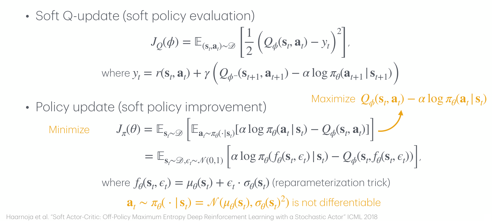
25. α 자동 조정 (Automatically Tuning α)
25.1 \(\alpha\)는 매우 중요한데, 손으로 정하기 어렵다
최대 엔트로피 목적함수 \(\mathbb{E}_{\tau \sim \pi_\theta(\tau)}\big[\sum_t r(\mathbf{s}_t, \mathbf{a}_t) + \alpha H(\pi(\cdot \mid \mathbf{s}_t))\big]\)에서 슬라이드는 \(\alpha\)만 주황색으로 칠합니다. \(\alpha\)가 탐색–활용 절충을 조절하므로 매우 중요하다는 것입니다.
- \(\alpha\)가 크면 정책 엔트로피를 최대화하는 데 집중합니다.
- \(\alpha\)가 작으면 보상을 최대화하는 데 집중합니다.
- 가장 좋은 \(\alpha\)는 환경마다 다릅니다.
마지막 항목이 특히 까다로운 이유는 \(\alpha\)가 보상의 단위와 엔트로피의 단위 사이의 환율이기 때문입니다. 보상의 크기가 환경마다 다르면 같은 \(\alpha\)라도 엔트로피에 매기는 상대적 가치가 달라집니다. 21절의 보충 계산 \(\sigma^{\ast 2} = \alpha/\kappa\)에서도, \(Q\)의 곡률 \(\kappa\)가 보상의 크기를 따라 커지고 작아지므로 같은 \(\alpha\)가 환경에 따라 전혀 다른 무작위성을 만들어 냅니다.
25.2 가격 대신 수량을 정한다: 제약 최적화로의 재정식화
그래서 슬라이드는 목적함수를 다시 씁니다.
\[ \max_\pi\ \sum_t \mathbb{E}_\tau\big[r(\mathbf{s}_t, \mathbf{a}_t)\big] \quad \text{s.t.}\quad \mathbb{E}_\tau\big[-\log \pi(\mathbf{a}_t \mid \mathbf{s}_t)\big] \ge H \]
보상을 최대화하되, 정책의 엔트로피가 최소 \(H\) 이상이어야 한다는 제약을 겁니다. 엔트로피에 얼마를 쳐 줄지(가격 \(\alpha\))를 정하는 대신 엔트로피를 얼마 이상 유지할지(수량 \(H\))를 정하는 것이고, 수량은 보상의 크기와 무관하게 정할 수 있습니다. 여기서 \(H\)는 21절의 엔트로피 함수 \(H(\pi)\)가 아니라 목표 엔트로피라는 상수입니다. 슬라이드가 같은 글자를 두 뜻으로 쓰고 있으므로 괄호의 유무로 구분해 읽어야 합니다.
25.3 라그랑주 쌍대 문제
이 제약 문제는 라그랑주 쌍대 문제(Lagrangian dual problem)로 풀 수 있습니다.
1단계 (라그랑주 함수). 제약 \(\mathbb{E}[-\log \pi] - H \ge 0\)에 승수 \(\alpha \ge 0\)을 곱해 목적함수에 더하면
\[ L(\pi, \alpha) = \sum_t \mathbb{E}_\tau\big[r(\mathbf{s}_t, \mathbf{a}_t)\big] + \alpha\Big(\mathbb{E}_\tau\big[-\log \pi(\mathbf{a}_t \mid \mathbf{s}_t)\big] - H\Big) \ \ \longrightarrow\ \ \sum_t \mathbb{E}_\tau\Big[r(\mathbf{s}_t, \mathbf{a}_t) - \alpha\big(\log \pi(\mathbf{a}_t \mid \mathbf{s}_t) + H\big)\Big] \]
입니다. 오른쪽은 슬라이드처럼 제약을 매 시점에 걸어 합 안으로 넣은 형태입니다.
2단계 (왜 \(\alpha\)에 대해서는 최소화인가). 정책 \(\pi\)를 하나 고정하고 \(\alpha \ge 0\)에 대해 \(L\)을 최소화해 보면,
- \(\pi\)가 제약을 만족하면 괄호 안이 \(0\) 이상이므로 최소는 \(\alpha = 0\)에서 얻어지고, \(L\)은 원래의 보상 목적함수와 같아집니다.
- \(\pi\)가 제약을 위반하면 괄호 안이 음수이므로 \(\alpha \to \infty\)로 보내 \(L\)을 얼마든지 작게 만들 수 있습니다.
즉 \(\min_{\alpha \ge 0} L(\pi, \alpha)\)는 “제약을 지키면 보상, 어기면 \(-\infty\)”이고, 이것을 \(\pi\)에 대해 최대화한 \(\max_\pi \min_{\alpha \ge 0} L\)이 원래의 제약 문제입니다. 순서를 바꾼 것이 슬라이드의 쌍대 문제입니다.
\[ \min_{\alpha \ge 0}\ \max_\pi\ \sum_t \mathbb{E}_\tau\Big[r(\mathbf{s}_t, \mathbf{a}_t) - \alpha\big(\log \pi(\mathbf{a}_t \mid \mathbf{s}_t) + H\big)\Big] \]
3단계 (번갈아 풀기).
- \(\alpha\)를 고정하고 \(\pi\)에 대해 최대화하면, \(-\alpha H\)는 정책과 무관한 상수이므로 남는 것은 \(\sum_t \mathbb{E}[r - \alpha \log \pi]\), 곧 온도 \(\alpha\)의 최대 엔트로피 강화학습 그 자체입니다. 24절의 소프트 정책 반복이 이 단계를 맡습니다.
- \(\pi\)를 고정하고 \(\alpha\)에 대해 최소화할 때, \(L\)을 \(\alpha\)로 미분하면
\[ \frac{\partial L}{\partial \alpha} = \mathbb{E}\big[-\log \pi(\mathbf{a}_t \mid \mathbf{s}_t)\big] - H = (\text{현재 정책의 엔트로피}) - (\text{목표 엔트로피}) \]
입니다. 경사 하강으로 \(\alpha \leftarrow \alpha - \lambda\big(\mathbb{E}[-\log \pi] - H\big)\) (\(\lambda\)는 학습률, \(\alpha \ge 0\) 유지)를 하면, 엔트로피가 목표보다 높으면 \(\alpha\)가 줄어 보상에 더 집중하고, 목표보다 낮으면 \(\alpha\)가 커져 엔트로피를 끌어올립니다. \(\alpha\)가 정책의 엔트로피를 목표 근처에 붙잡아 두는 자동 조절기처럼 움직이는 것입니다.
자동 조정은 \(\alpha\)를 손으로 정할 필요를 없애지만, 그 대신 목표 엔트로피 \(H\)라는 새 초모수를 요구합니다. 27절의 SAC 요약 슬라이드가 유일한 단점으로 “\(\alpha\) (or \(H\)) needs to be carefully tuned”를 적는 이유입니다. 다만 \(H\)는 보상의 크기와 무관한 “정책이 얼마나 무작위해야 하는가”라는 양이므로, 환경이 바뀌어도 \(\alpha\)보다는 덜 민감하게 정할 수 있다는 것이 재정식화의 취지입니다. 자동 조정의 효과는 28절의 SAC 논문 도표에서 “learned temperature”와 “fixed temperature” 곡선의 비교로 볼 수 있습니다.
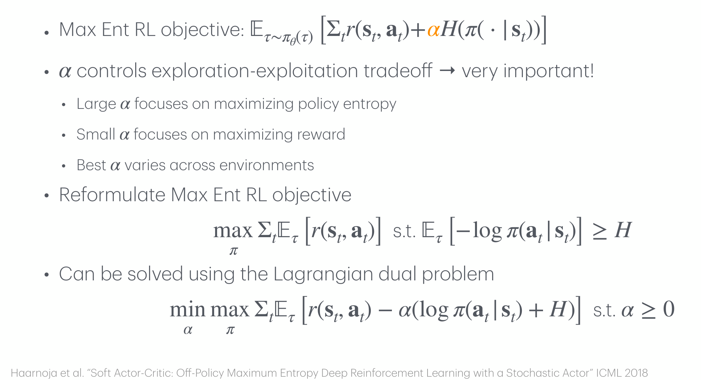
26. SAC 의사코드 (Algorithm 1: Soft Actor-Critic)
20–25절의 조각을 모은 알고리즘 상자입니다. 슬라이드는 두 곳에 각각 두 개의 주황색 테두리를 두르고 왼쪽과 오른쪽에 이름을 달았으며, 맨 아래에 “Automatically tune \(\alpha\)”를 덧붙였습니다.
Algorithm 1 Soft Actor-Critic
──────────────────────────────────────────────────────────────────────────────────
1: Input: initial policy parameters θ, Q-function parameters φ1, φ2, empty replay buffer D
2: Set target parameters equal to main parameters φ_targ,1 ← φ1, φ_targ,2 ← φ2
3: repeat
4: Observe state s and select action a ~ π_θ(·|s)
5: Execute a in the environment
6: Observe next state s', reward r, and done signal d to indicate whether s' is terminal
7: Store (s, a, r, s', d) in replay buffer D
8: If s' is terminal, reset environment state.
9: if it's time to update then
10: for j in range(however many updates) do
11: Randomly sample a batch of transitions, B = {(s, a, r, s', d)} from D
12: Compute targets for the Q functions:
y(r, s', d) = r + γ(1 − d) ( min_{i=1,2} Q_φtarg,i(s', ã') − α log π_θ(ã'|s') ),
ã' ~ π_θ(·|s')
# min Q 부분 ← Clipped double Q-learning
# α log π 부분 → Soft Q-value (Max Ent RL)
13: Update Q-functions by one step of gradient descent using
∇_φi (1/|B|) Σ_{(s,a,r,s',d)∈B} (Q_φi(s, a) − y(r, s', d))² for i = 1, 2
14: Update policy by one step of gradient ascent using
∇_θ (1/|B|) Σ_{s∈B} ( min_{i=1,2} Q_φi(s, ã_θ(s)) − α log π_θ(ã_θ(s)|s) ),
where ã_θ(s) is a sample from π_θ(·|s) which is differentiable wrt θ
via the reparametrization trick.
# min Q 부분 ← DDPG style policy updates
# α log π 부분 → Max Ent RL
15: Update target networks with
φ_targ,i ← ρ φ_targ,i + (1 − ρ) φ_i for i = 1, 2
16: end for
17: end if
18: until convergence
# (슬라이드 하단 주석) Automatically tune α
──────────────────────────────────────────────────────────────────────────────────26.1 주석이 가리키는 것
| 위치 | 테두리 친 항 | 주황색 이름 | 앞의 절 |
|---|---|---|---|
| 12번 줄 (표적) | \(\min_{i=1,2} Q_{\phi_{\text{targ},i}}(s', \tilde{a}')\) | Clipped double Q-learning | 17.2 (TD3) |
| 12번 줄 (표적) | \(\alpha \log \pi_\theta(\tilde{a}' \mid s')\) | Soft Q-value (Max Ent RL) | 23절 |
| 14번 줄 (정책) | \(\min_{i=1,2} Q_{\phi_i}(s, \tilde{a}_\theta(s))\) | DDPG style policy updates | 12절, 24.3 |
| 14번 줄 (정책) | \(\alpha \log \pi_\theta(\tilde{a}_\theta(s) \mid s)\) | Max Ent RL | 21절, 24.2 |
| 슬라이드 하단 | — | Automatically tune \(\alpha\) | 25절 |
12번 줄은 24.1의 \(J_Q\) 표적을 두 비평가로 확장한 것이고, 14번 줄의 괄호 안은 24.2의 \(-J_\pi\)를 배치 평균으로 옮긴 것입니다(그래서 “경사 상승”입니다). 14번 줄의 설명 문장 “\(\tilde{a}_\theta(s)\) is a sample from \(\pi_\theta(\cdot \mid s)\) which is differentiable wrt \(\theta\) via the reparametrization trick”이 24.3의 \(f_\theta(\mathbf{s}, \epsilon)\)를 가리킵니다. \(\alpha\)를 갱신하는 줄은 상자 안에 없고, 25.3의 경사 하강이 그 역할을 합니다.
26.2 TD3와 무엇이 같고 무엇이 다른가
| TD3 (18절) | SAC | |
|---|---|---|
| 정책 | 결정적 \(\mu_\theta(s)\) | 확률적 \(\pi_\theta(\cdot \mid s)\) |
| 탐색 (4번 줄) | \(\mathrm{clip}(\mu_\theta(s) + \epsilon, a_{Low}, a_{High})\) — 바깥에서 잡음을 더함 | \(a \sim \pi_\theta(\cdot \mid s)\) — 정책에서 그대로 표집 |
| 표적 행동 | 표적 정책 + 잘린 잡음 (평활화) | 현재 정책에서 표집한 \(\tilde{a}'\) |
| 표적 | \(r + \gamma(1-d)\min_i Q_{\phi_{\text{targ},i}}\) | \(r + \gamma(1-d)\big(\min_i Q_{\phi_{\text{targ},i}} - \alpha \log \pi_\theta\big)\) |
| 정책 갱신에 쓰는 비평가 | \(Q_{\phi_1}\) 하나 | \(\min_{i=1,2} Q_{\phi_i}\) |
| 정책 갱신 주기 | policy_delay마다 (지연) |
매 반복 |
| 표적 신경망 | 비평가 둘 + 정책 | 비평가 둘뿐 (2번 줄에 \(\theta_{\text{targ}}\)가 없다) |
| 추가 초모수 | 잡음 \(\sigma\), 클리핑 \(c\), policy_delay |
온도 \(\alpha\) 또는 목표 엔트로피 \(H\) |
공통점은 쌍둥이 비평가와 최솟값 표적, 소프트 표적 갱신, 재생 버퍼입니다. 차이는 무작위성이 들어가는 방식에서 갈립니다. TD3가 탐색(4번 줄)과 표적 평활화(12번 줄)에 잡음을 바깥에서 따로따로 넣었다면, SAC는 확률적 정책 하나가 두 역할을 모두 맡습니다 — 행동을 표집하는 것이 곧 탐색이고, 표적에서 다음 행동을 가우시안 정책으로 표집해 여러 번 쓰는 것은 기댓값으로 보면 17.3의 \(\mathbb{E}_\epsilon[Q(\mathbf{s}', \pi(\mathbf{s}') + \epsilon)]\)과 같은 꼴의 평균에 해당합니다. 정책의 표적 신경망이 없다는 점도 눈여겨볼 만합니다 — 표적 행동 \(\tilde{a}'\)을 현재 정책에서 표집하므로, 12번 줄에는 정책의 사본이 등장하지 않습니다.
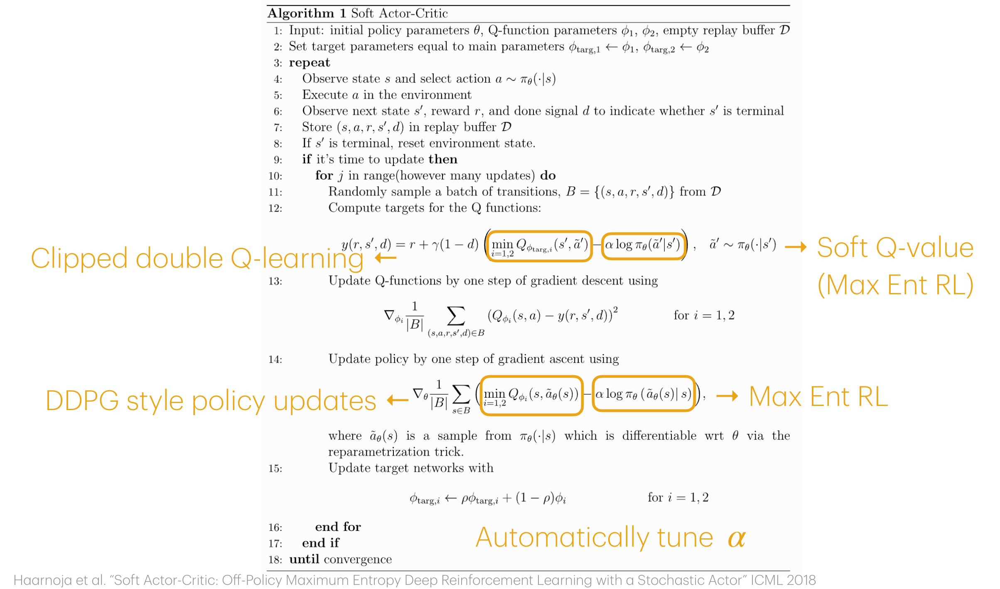
27. SAC 요약 (SAC)
- 오프폴리시 행위자–비평가 알고리즘 (Off-policy, actor-critic RL algorithm) — 재생 버퍼의 데이터로 비평가와 확률적 행위자를 함께 학습합니다.
- 최대 엔트로피 강화학습으로 탐색을 개선 (Improves exploration with maximum entropy RL) — 탐색이 바깥에서 덧붙인 잡음이 아니라 목적함수의 일부가 되었습니다(21절).
- 클리핑된 이중 Q-학습으로 학습 안정성을 개선 (TD3와 같음) (Improves training stability using clipped double Q-learning (same with TD3))
- \((-)\) \(\alpha\)(또는 \(H\))를 신중하게 조정해야 함 (\(\alpha\) (or \(H\)) needs to be carefully tuned) — 슬라이드에서 유일하게 붉은 주황색으로 적힌 단점입니다(25절).
- 실제로 잘 동작한다 (Works well in practice!)
- 연속 행동을 위한 최신(state-of-the-art) 오프폴리시 강화학습 알고리즘 (The state-of-the-art off-policy RL algorithm for continuous actions)
세 알고리즘의 요약 슬라이드를 나란히 놓으면 이 부분의 흐름이 한눈에 보입니다.
| DDPG (16절) | TD3 (19절) | SAC (27절) | |
|---|---|---|---|
| 계보 | 오프폴리시 행위자–비평가, 연속 행동판 DQN | 개선된 DDPG | 오프폴리시 행위자–비평가 |
| 정책 | 결정적 | 결정적 | 확률적 (가우시안) |
| 안정화 장치 | 표적 신경망(소프트 갱신) | + 클리핑된 이중 Q-학습, 지연된 정책 갱신, 표적 정책 평활화 | + 클리핑된 이중 Q-학습 |
| 탐색 | 행동에 잡음 | 행동에 잡음 | 최대 엔트로피 (정책 자체의 무작위성) |
| 슬라이드가 적은 약점 | 초모수에 민감 | — | \(\alpha\)(또는 \(H\)) 조정 |
| 슬라이드의 평가 | — | 최신(state-of-the-art) | 최신(state-of-the-art) |
마지막 행에서 TD3와 SAC가 같은 문장으로 평가된다는 점이 다음 절의 질문을 부릅니다 — 그렇다면 둘 중 무엇이 나은가?
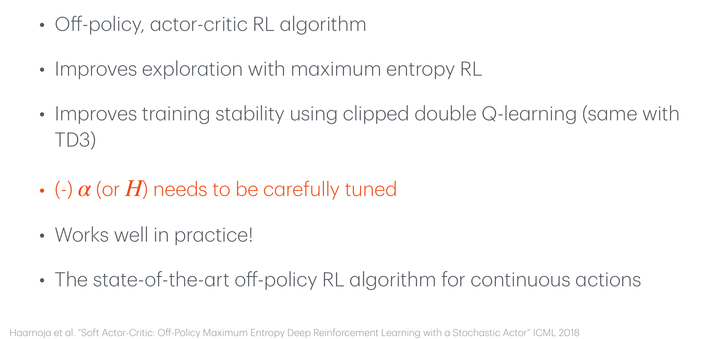
28. TD3 대 SAC (TD3 vs. SAC)
두 알고리즘이 모두 “최신”이라면 어느 쪽이 나은가 — 슬라이드는 이 질문에 문장으로 답하지 않고, 두 논문의 도표를 한 장에 겹쳐 놓습니다. 왼쪽 아래에 “From TD3 paper”, 오른쪽 위에 “From SAC paper”라는 이름표가 붙어 있습니다.
28.1 TD3 논문의 도표
왼쪽은 19.1에서 본 TD3 논문의 학습 곡선(HalfCheetah-v1, Hopper-v1, Walker2d-v1, Ant-v1, Reacher-v1 등)을 그대로 가져온 것이고, 일부는 오른쪽 도표에 가려 있습니다. 이 도표에서 SAC(분홍)는 TD3(파랑)보다 한참 아래에 있습니다. 예컨대 HalfCheetah-v1의 \(100\)만 스텝 지점에서 TD3는 약 \(9{,}500\), SAC는 약 \(1{,}700\)입니다.
28.2 SAC 논문의 도표
오른쪽은 SAC 논문의 학습 곡선 여섯 장입니다. 범례는 SAC (learned temperature)(파랑), SAC (fixed temperature)(주황), DDPG(갈색), TD3(초록), PPO(보라)이고, 가로축은 백만 스텝 단위로 과제에 따라 \(1\), \(3\), \(10\)까지 이어집니다.
| 과제 (학습 길이) | SAC (learned) | SAC (fixed) | TD3 | 그 밖의 방법 |
|---|---|---|---|---|
| Hopper-v2 (100만) | 약 \(3{,}300\) | 약 \(3{,}300\) | 약 \(2{,}800\) | PPO 약 \(2{,}900\), DDPG 약 \(1{,}700\) |
| Walker2d-v2 (300만) | 약 \(6{,}000\) | 약 \(5{,}000\) | 약 \(5{,}300\) | PPO 약 \(4{,}200\), DDPG 약 \(1{,}200\) |
| HalfCheetah-v2 (300만) | 약 \(15{,}000\) | 약 \(15{,}000\) | 약 \(9{,}800\) | DDPG 약 \(7{,}000\), PPO 약 \(2{,}600\) |
| Ant-v2 (300만) | 약 \(5{,}600\) | 약 \(6{,}000\) | 약 \(4{,}600\) | PPO 약 \(2{,}800\), DDPG 약 \(500\) |
| Humanoid-v2 (1,000만) | 약 \(8{,}000\) | 약 \(6{,}500\) | \(0\) 부근 (곡선이 400만 스텝에서 끝남) | PPO 약 \(6{,}300\), DDPG 약 \(500\) |
| Humanoid (rllab) (1,000만) | \(1{,}500\)–\(4{,}500\) 사이에서 크게 진동 | 약 \(5{,}500\) | \(0\) 부근 (곡선이 약 300만 스텝에서 끝남) | PPO 약 \(2{,}200\), DDPG 약 \(0\) |
(값은 각 곡선의 끝 부분을 그래프에서 읽은 대략치입니다.) 이 도표에서는 반대로 SAC가 모든 과제에서 가장 위에 있고, TD3는 중간에 머물거나 Humanoid 계열에서는 거의 학습하지 못한 것으로 그려집니다.
28.3 두 도표를 함께 읽기
- 순위가 뒤집힙니다. TD3 논문에서는 TD3가, SAC 논문에서는 SAC가 앞섭니다. 같은 SAC가 TD3 논문의 HalfCheetah-v1 \(100\)만 스텝에서는 약 \(1{,}700\)에 머물지만, SAC 논문의 HalfCheetah-v2에서는 같은 \(100\)만 스텝 지점에서 이미 \(10{,}000\)을 넘습니다.
- 실험 조건이 같지 않습니다. 환경 판본(
-v1과-v2), 학습 길이(\(100\)만 스텝과 최대 \(1{,}000\)만 스텝), 비교 대상의 구성이 두 도표에서 다릅니다. 19.1에서 같은 DDPG라도 원래 구현과 “our DDPG”의 성능이 과제마다 크게 달랐다는 점도 함께 떠올려 볼 만합니다. - 자동 온도 조정의 효과는 과제마다 다릅니다. SAC 논문 안에서 learned temperature(25절의 자동 조정)는 Walker2d-v2와 Humanoid-v2에서 fixed temperature보다 높지만, Ant-v2와 Humanoid (rllab)에서는 fixed temperature가 더 높거나 더 안정적입니다.
슬라이드는 어느 쪽이 낫다는 판정을 내리지 않고, 두 요약 슬라이드(19·27절)는 두 알고리즘을 똑같이 “연속 행동을 위한 최신 오프폴리시 알고리즘”이라 부릅니다. 두 도표를 겹쳐 놓은 배치가 말해 주는 것은, 서로 다른 논문이 서로 다른 조건에서 보고한 곡선만으로는 순위를 정할 수 없다는 점입니다. 같은 알고리즘의 성능이 논문에 따라 몇 배씩 달라질 수 있으므로, 비교는 같은 구현 품질·같은 환경 판본·같은 학습 예산 아래에서 해야 의미가 있습니다. 다음 시간의 주제가 바로 강화학습 벤치마크입니다(30절).
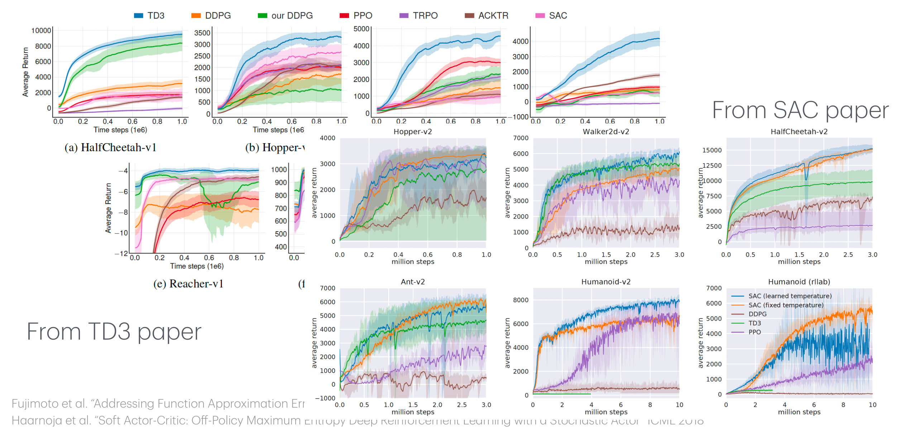
29. 지금까지 배운 것 (What We Have Learned So Far)
이번 강의로 과목의 큰 줄기 하나가 마무리되며, 슬라이드는 지금까지의 내용을 다섯 갈래로 정리하고 각 갈래에 과제를 대응시킵니다.
| 갈래 | 슬라이드의 세부 항목 | 과제 | 이 블로그의 대응 회차 |
|---|---|---|---|
| 강화학습 문제 (Reinforcement learning problem) | MDP, benchmarks | — | 02회차 (MDP) |
| 모방학습 (Imitation learning) | BC, DAgger, ACT, Diffusion Policy | HW1 | 01회차 |
| 정책 경사와 온폴리시 행위자–비평가 (Policy gradient and on-policy actor-critic methods) | policy gradient, REINFORCE, reward to go, baseline, n-step return, GAE, PPO | HW2 | 03–05회차 |
| 가치 기반 방법 (Value-based methods) | DQN, double DQN, prioritized experience replay | HW3 | 06회차 |
| 오프폴리시 행위자–비평가 (Off-policy actor-critic methods) | DDPG, TD3, SAC | HW4 | 07회차 (본 포스트) |
마지막 두 갈래의 관계가 이번 강의의 요지를 요약합니다. 가치 기반 방법(06회차)은 정책망을 버리고 \(Q\) 하나로 오프폴리시 학습을 얻었고, 온폴리시 행위자–비평가(04–05회차)는 정책망을 직접 학습하되 데이터를 재사용하기 어려웠습니다. 오프폴리시 행위자–비평가는 두 갈래를 합친 것입니다 — 가치 기반 방법의 재생 버퍼·표적 신경망·오프폴리시 표적을 그대로 쓰면서, 연속 행동에서 계산할 수 없게 된 \(\arg\max\)를 정책망으로 다시 들여왔습니다.
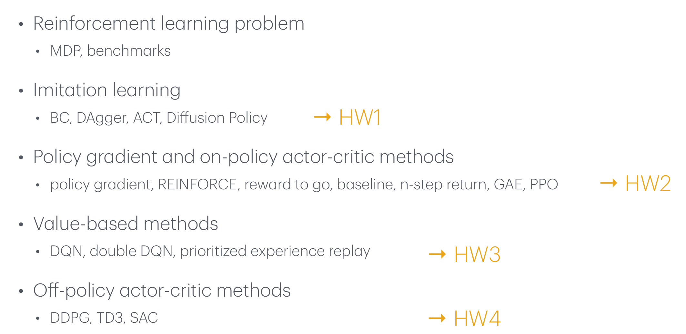
30. 다음 시간 (Next Class)
- 오프폴리시 강화학습 복습 (Off-policy RL recap)
- 강화학습 벤치마크 (RL benchmarks)
다음 강의는 이번 회차를 되짚으며 시작해, 28절에서 문제가 되었던 벤치마크 자체를 다룹니다. 알고리즘의 순위가 어떤 환경에서, 어떤 조건으로 측정되는지를 알아야 논문들이 보고하는 곡선을 제대로 읽을 수 있다는 점에서, 이번 강의의 마지막 슬라이드와 자연스럽게 이어지는 주제입니다.
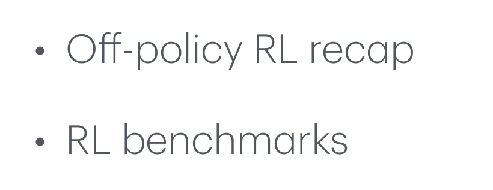
정리하며 (Closing Remarks)
이번 강의의 논리 사슬을 한 장으로 요약하면 다음과 같습니다.
| 단계 | 내용 | 근거 |
|---|---|---|
| ① 출발점 | Q-학습은 표적 \(r + \max_{\mathbf{a}'} Q(\mathbf{s}', \mathbf{a}')\)와 정책 \(\arg\max_{\mathbf{a}} Q(\mathbf{s}, \mathbf{a})\)로 이루어지며, 표적이 정책을 참조하지 않아 오프폴리시다. 재생 버퍼·표적 신경망·엡실론 탐욕이 이를 DQN으로 안정화했다 | 2–5, 9절 |
| ② 복습의 초점 | \(\mathbb{E}[\max] \ge \max \mathbb{E}\) 때문에 \(\max\)가 양의 오차를 골라 과대추정하며, Double DQN은 행동 선택과 평가를 서로 다른 신경망에 맡겨 이를 줄인다 | 6–8절 |
| ③ 벽 | 행동이 연속이면 표적의 \(\max\)와 정책의 \(\arg\max\)가 모두 상태마다 풀어야 하는 최적화가 되고, 후보를 많이 시도하는 방법도 반복 최적화도 느리고 부정확하다 | 10절 |
| ④ 발상 | \(\arg\max\)를 결정적 정책망 \(\pi_\theta(\mathbf{s})\)로 근사하고 \(\max_\theta \mathbb{E}_{\mathbf{s} \sim \mathcal{B}}[Q_\phi(\mathbf{s}, \pi_\theta(\mathbf{s}))]\)로 학습한다. \(Q\)가 조금 바뀌면 최선의 행동도 조금만 움직이므로 경사 몇 걸음으로 따라갈 수 있다 | 11절 |
| ⑤ 경사 | 연쇄 법칙으로 \(\nabla_\theta J = \mathbb{E}[\nabla_{\mathbf{a}} Q_\phi\, \nabla_\theta \pi_\theta]\)를 얻는다. 행동 표집이 없고 비평가가 방향을 직접 주므로 PPO보다 분산이 작지만, 그만큼 비평가에 전적으로 의존한다 | 12절 |
| ⑥ 안정화 | 정책과 가치 모두에 표적 신경망을 두고, 폴랴크 평균 \(\phi^- \leftarrow \rho\phi^- + (1-\rho)\phi\)로 매 스텝 조금씩 따라가게 한다(평균 지연 \(\rho/(1-\rho)\)) | 13절 |
| ⑦ DDPG | 표적 \(r + Q_{\phi^-}(\mathbf{s}', \pi_{\theta^-}(\mathbf{s}'))\), 비평가 회귀, 행위자 경사 상승, 소프트 표적 갱신, 행동 잡음 탐색을 조립한 연속 행동판 DQN이다. 오프폴리시 행위자–비평가이지만 초모수에 민감하다 | 14–16절 |
| ⑧ DDPG의 결함 | 행위자가 \(Q\)를 최대화하므로 \(\max\)의 과대추정이 그대로 남고, 결정적 정책은 비평가의 뾰족한 오차에 과적합한다 | 17.1 |
| ⑨ TD3의 처방 | 두 비평가의 최솟값 표적(\(\mathbb{E}[\min] \le \min \mathbb{E}\)), 지연된 정책 갱신, 잘린 잡음을 섞은 표적 행동(평활화)으로 비평가를 덜 믿게 만든다. 추정치가 실제 값에 붙는다 | 17.2–18절 |
| ⑩ TD3의 결과 | MuJoCo 일곱 과제 중 다섯에서 뚜렷하게 가장 높으며, 연속 행동의 최신 오프폴리시 알고리즘으로 정리된다 | 19절 |
| ⑪ 확률적 정책 | 가우시안 정책 \(\mathcal{N}(\mu(\mathbf{s}), \sigma(\mathbf{s})^2)\)은 탐색을 정책에 내장하지만, 보상만 최대화하면 \(\tfrac12\sigma^2 Q'' < 0\) 때문에 \(\sigma \to 0\)으로 붕괴한다 | 20절 |
| ⑫ 최대 엔트로피 | 목적함수에 \(\alpha H(\pi(\cdot \mid \mathbf{s}_t))\)를 더한다. 가우시안 엔트로피 \(\tfrac12\log(2\pi e\,\sigma^2)\)가 붕괴를 벌점하고, 여러 해를 붙잡아 강건성과 탐색을 얻는다 | 21–22절 |
| ⑬ 소프트 Q-값 | \(V(\mathbf{s}') = \mathbb{E}[Q - \alpha\log\pi] = \mathbb{E}[Q] + \alpha H\)이며, 재귀를 펼치면 보상과 엔트로피 보너스의 합, 곧 최대 엔트로피 목적함수가 된다 | 23절 |
| ⑭ 소프트 정책 반복 | 현재 정책에서 뽑은 다음 행동으로 만든 표적 \(r + \gamma(Q_{\phi^-} - \alpha\log\pi_\theta)\)로 비평가를, \(J_\pi = \mathbb{E}[\alpha\log\pi_\theta - Q_\phi]\)의 최소화로 행위자를 학습한다. 재매개변수화 \(\mathbf{a} = \mu_\theta + \epsilon\,\sigma_\theta\)가 DDPG식 경사를 가능하게 한다 | 24절 |
| ⑮ 온도 조정 | \(\alpha\) 대신 엔트로피 하한 \(H\)를 제약으로 걸고 라그랑주 쌍대로 풀면, \(\alpha\)가 (현재 엔트로피 \(-\) \(H\))를 따라 자동으로 오르내린다 | 25절 |
| ⑯ SAC | 확률적 행위자, 쌍둥이 비평가의 최솟값, 엔트로피 항, 자동 온도를 결합한 최신 오프폴리시 알고리즘이며, \(\alpha\)(또는 \(H\)) 조정이 슬라이드에 적힌 유일한 단점이다 | 26–27절 |
| ⑰ 비교 | TD3 논문에서는 TD3가, SAC 논문에서는 SAC가 앞선다. 환경 판본·학습 길이·구현이 다른 비교로는 순위를 정할 수 없다 | 28절 |
| ⑱ 강의 전체 | 모방학습 → 정책 경사와 온폴리시 행위자–비평가 → 가치 기반 방법 → 오프폴리시 행위자–비평가(HW1–HW4)로 이어지며, 마지막 갈래가 앞의 두 갈래를 합친다 | 29절 |
| ⑲ 다음 시간 | 오프폴리시 강화학습 복습과 강화학습 벤치마크 | 30절 |